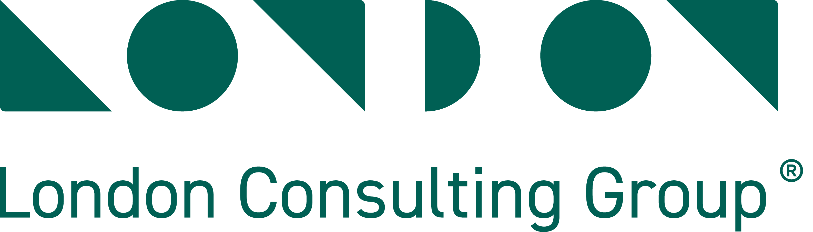

| CBS | Cost Breakdown Structure: desglose del presupuesto por partidas y sub-partidas |
| SOW | Scope of Work: documento que define qué incluye, qué excluye y los supuestos de cada disciplina |
| PIC | Presupuesto Interno de Control: el presupuesto aprobado que sirve como línea base para medir desviaciones |
| TVD | Target Value Delivery: metodología donde el costo objetivo del cliente guía al diseño (no al revés) |
| EVM | Earned Value Management: método para comparar avance planeado vs real vs costo real |
| BIM | Building Information Modeling: modelo 3D integrado que conecta todas las disciplinas |
| DCM | Design Coordination Meeting: sesión semanal de revisión cruzada entre disciplinas |
| ICE | Integrated Concurrent Engineering: sesiones intensivas donde todas las disciplinas trabajan juntas en tiempo real |
| Kraljic | Matriz Kraljic: herramienta para categorizar compras en 4 cuadrantes: estratégicas, apalancadas, cuello de botella y rutinarias |
| OC | Orden de Compra |
| REPSE | Registro de Prestadoras de Servicios Especializados: requisito legal para subcontratación en México |
| EVM | (ver Presupuestos P3) |
| CPI | Cost Performance Index: si es <1 hay sobrecosto |
| SPI | Schedule Performance Index: si es <1 hay retraso |
| Curva S | Gráfico que muestra avance acumulado planeado vs real a lo largo del tiempo |
| PMBOK | Project Management Body of Knowledge: estándar internacional de gestión de proyectos (PMI) |
| ERP | Enterprise Resource Planning: sistema integrado de gestión (en Aura usan Odoo) |
| CAM | Common Area Maintenance: cuota de mantenimiento que pagan los inquilinos/propietarios del parque |
| DSCR | Debt Service Coverage Ratio: cuántas veces el ingreso cubre el pago de deuda |
El prediagnóstico se realizó mediante entrevistas semiestructuradas con el equipo directivo, gerencial y operativo de Aura Desarrollos, complementadas con revisión de documentos operativos, financieros y comerciales proporcionados por el cliente. Cada entrevista exploró los 13 pilares del modelo macro, con énfasis en los temas relevantes al rol del entrevistado.
| # | Nombre | Puesto | Estado |
|---|---|---|---|
| 1 | Vidal Rodríguez Hernández | Director General | ✓ Completada |
| 2 | Francisco Lastra | Subdirector de Operaciones | ✓ Completada |
| 3 | Iván Rubio Rivas | Subdirector de Nuevos Negocios | ✓ Completada |
| 4 | Clara Angélica Medina Elizondo | Subdirectora de Servicios Corporativos | ✓ Completada |
| 5 | Karla Mireya León Amaro | Gerente de Operaciones | ✓ Completada |
| 6 | Isabel Guadalupe Ramos Moreno | Gerente de Recursos Humanos | ✓ Completada |
| 7 | Luis Alberto Arteaga Rocha | Gerente de TI | ✓ Completada |
| 8 | Jorge Eduardo García Sánchez | Jefe de Planeación y Costos | ✓ Completada |
| 9 | Juan Higinio Contreras Navarro | Jefe de Obra | ✓ Completada |
| 10 | Jorge Luis de la Rosa Vázquez | Jefe de Compras | ✓ Completada |
| 11 | Adriana Bojorquez | Esp. Administración del Personal | ✓ Completada |
| 12 | Nayeli Pérez García | Gerente de Contraloría | ✓ Completada |
| 13 | Joaquín Valdez Alvarado | Jefe de Planeación Financiera | ✓ Completada |
| 14 | Brenda Lucía Campillo Avalos | Jefe de Finanzas | Pendiente |
| 15 | Mitzy Lucía Sánchez Reynaga | Jefe de Control de Obra | ✓ Completada |
| 16 | Rocío Iveth Rosas Nieto | Jefe Administrativo | ✓ Completada |
| 17 | Alejandra Enríquez Ruiz | Jefe de Proyectos | ✓ Completada |
| 18 | Alma Iris Montalvo Céspedes | Coordinadora Administrativa | Pendiente |
| 19 | Ing. Alan Sahagún | Supervisor de Obras | ✓ Completada |
| 20 | Lluvya Yamyleth Bautista Cabrera | Jefe de Desarrollo Organizacional | Pendiente |
| 21 | Nadia Carolina Rosado González | Jefe de Calidad y ESR | ✓ Completada |
| 22 | Lic. Carolina Medina | Consultora Jurídica | Pendiente |
| 23 | Equipo de Diseño Técnico (Guadalupe Carrizales, Daniela Mora) | Especialistas de Proyectos | ✓ Completada |
| 24 | Equipo de Marketing | Mercadotecnia y Comunicación | Pendiente |
| 25 | Visita a Obra con Karla & Alan | Recorrido de obra (medio día) | ✓ Completada |
| Sesiones de profundización (segunda ronda) | |||
| R-01 | Francisco Lastra (Reunión 02) | Subdirector de Operaciones — Seguimiento a Obra | ✓ Completada |
| R-02 | Jorge García Sánchez (Entrevista 02) | Jefe de Planeación y Costos — Presupuestos de Obra | ✓ Completada |
Adicionalmente se revisaron documentos operativos, financieros y comerciales: estados de resultados, balance general, organigramas, base de órdenes de compra (472 OCs / $130.5M MXN), registros de concreto (794), combustible (8,600+), acarreo (15,000+), contratos, nómina, pipeline comercial, rent roll, y reportes de avance.
| DG | Comercial | Aura Desarrollos — Operaciones | Servicios Corporativos | Rel. Institucionales | |||||||
|---|---|---|---|---|---|---|---|---|---|---|---|
| Vidal Rodríguez Dir. General |
Iván Rubio Subdir. Nuevos Negocios |
Francisco Lastra Subdir. Ops |
Karla León Gte. Ops |
Juan Contreras Jefe Obra |
Alan Sahagún Supervisor |
Mitzy Sánchez Control Obra |
Clara Medina Subdir. SC |
Nayeli Pérez Contraloría |
Joaquín Valdez Plan. Financiera |
Isabel Ramos Gte. RH |
Nadia Rosado Calidad & ESR |
| Jorge García Plan. y Costos |
Alejandra Enríquez Jefe Proyectos |
Rocío Rosas Jefe Admin. |
Equipo DT Diseño Técnico |
Visita Campo Karla & Alan |
Jorge de la Rosa Jefe Compras |
Adriana Bojorquez Admón. Personal |
Luis Arteaga Gte. TI |
+ 5 pendientes | |||
Esta sección presenta la perspectiva de la Dirección General al inicio del prediagnóstico. La evaluación CMM objetiva (basada en evidencia multi-fuente) se presenta más adelante en el documento.
Aura se encuentra en una etapa de crecimiento donde busca consolidarse como desarrollador de parques industriales y naves BTS en México. Para lograrlo, necesita fortalecer la estructura, los procesos y los mecanismos de control.
Ser reconocido por la planeación y desarrollo de parques industriales y naves BTS, con infraestructura de alta calidad que genere valor sostenible para clientes e inversionistas.
Esta calificación refleja la percepción de la Dirección General sobre cada cruce expectativa × etapa de la cadena de valor, ajustada con retroalimentación posterior de Vidal Rodríguez y Adrián. No sustituye la evaluación CMM objetiva que aparece más adelante, sino que la complementa con la visión del sponsor.
| Expectativa | Comercial | Plan. y Ppto | Ing. y Diseño | Compras | Ejec. Obra | Control | Entrega | Escrituración | Postventa | Finanzas | Sistemas | Gobernanza |
|---|---|---|---|---|---|---|---|---|---|---|---|---|
| E1. Estructura organizacional clara Equipo base, roles, puestos, compensación |
1 | 3 | 2 | 4 | 2 | 4 | 3 | 2 | 4 | 5 | 4 | 4 |
| E2. Procesos claros planeación → entrega Flujo end-to-end documentado y repetible |
1 | 4 | 2 | 5 | 3 | 5 | 4 | 1 | 5 | 5 | 3 | 4 |
| E3. Control de costos e inversión Asertividad presupuestal, eficiencia en compras |
— | 4 | 1 | 4 | 3 | 5 | — | — | — | 4 | — | 3 |
| E4. Tablero de control e indicadores Avance físico, financiero y de gestión en tiempo real |
1 | 3 | 2 | 5 | 5 | 5 | 4 | 1 | 5 | 4 | 4 | 4 |
| E5. Estándares de calidad y entrega Supervisión, entrega profesional, satisfacción |
— | 2 | 1 | 2 | 3 | 3 | 4 | 1 | 5 | — | — | 2 |
Nota: Esta calificación refleja la visión de la Dirección General al inicio del prediagnóstico. La evaluación CMM objetiva, basada en evidencia multi-fuente (entrevistas + documentos + análisis de datos), se presenta en las secciones siguientes del documento.
Antes de entrar al diagnóstico, es importante reconocer que Aura Desarrollos ha construido ventajas competitivas reales que pocas empresas de su tamaño logran en la región. Estas fortalezas son el cimiento sobre el cual se deben edificar las mejoras operativas — no se trata de empezar de cero, sino de institucionalizar lo que ya funciona.
Aura Desarrollos atraviesa un momento de inflexion. Con un parque industrial al 90% de comercializacion, un pipeline de mas de 350,000 m² en negociacion BTS, y contratos de arrendamiento que generan mas de $64M MXN anuales en ingreso recurrente, la empresa ha demostrado una capacidad comercial notable. Sin embargo, el prediagnostico revela una brecha critica entre la sofisticacion del frente comercial y la madurez operativa que lo soporta. El promedio CMM de 1.5/5.0 indica que la mayoria de los procesos se encuentran en nivel Inicial — dependientes de individuos, sin documentacion, sin controles y sin medicion. Las desviaciones presupuestales no se detectan (vialidades CLA +$11.4M), las compras operan en 92% de urgencia ($130.5M), y el control de obra se encuentra en etapa inicial. En esencia: los ingresos son robustos pero la organizacion filtra valor en cada eslabon de su cadena operativa. Este documento presenta los hallazgos de 19 entrevistas con el equipo directivo y operativo, 2 sesiones de profundizacion, y 1 visita de campo, complementados con analisis de documentos del cliente, bases de datos operativas y evidencia financiera.
No existe un sistema de control de avance fisico ni financiero. Las desviaciones presupuestales se detectan meses despues o no se detectan. Existe un reporte semanal de avance, pero su contenido es 85% fotografías y 15% datos. No incluye PPC (Plan Percent Complete), CNC (causas de no cumplimiento), curva S, ni análisis de ruta crítica. Es un reporte de estatus, no un instrumento de control.
P6+P7 — CMM 1.1De 472 ordenes de compra en Pantaleon, el 92% se clasifican como urgentes o altas prioridad. Solo el 8% siguen el proceso normal. El area de compras no recibe un programa de materiales ni participacion anticipada. Cuando se permite cotizar competitivamente, el ahorro alcanza 64%.
P5 — CMM 1.0 | $130.5M sin procesoEl analisis del presupuesto CLA revela que vialidades excede en 22.7% el presupuesto original ($50.2M → $61.6M). La partida electrica supera en 16%. Estas desviaciones se evidencian en el análisis de la información presupuestal del proyecto.
P3 — +$14.7M en desviaciones CLAEsquemas de compensación informales generalizados. El esquema de asimilados está extendido en la organización. La rotación de nuevas contrataciones es del 50% en 5 meses. Múltiples riesgos laborales, fiscales y de compliance activos que requieren formalización.
S2 — 6 riesgos de cumplimiento3 ingenieros para 2 naves de $150M+ cada una. 1 persona de TI dedica 15% a Aura. 1 comprador maneja 80% de las OC. RH no interviene en contratacion de Aura. El DG interviene hasta en compras de acero. La organizacion no esta disenada para la escala actual y mucho menos para el pipeline.
TX — CMM 1.0El Modelo de Madurez de Capacidades (CMM) utilizado en este prediagnostico es una adaptacion del framework CMMI de Carnegie Mellon, enriquecido con principios de Lean Construction y estandares internacionales relevantes para la industria del desarrollo inmobiliario industrial. El modelo evalua 13 pilares de la cadena de valor de Aura Desarrollos en 5 dimensiones y 5 niveles de madurez, proporcionando una radiografia estructurada del estado actual y una hoja de ruta hacia la excelencia operativa.
La evaluacion se basa en evidencia multi-fuente: 19 entrevistas con el equipo directivo y operativo, 2 sesiones de profundizacion y 1 visita de campo, complementadas con analisis de bases de datos operativas (ordenes de compra, registros de concreto, combustible, acarreo), documentos financieros, contratos, y la matriz estrategica del cliente. Cuando hay contradiccion entre fuentes, se registra la calificacion mas conservadora. La ausencia de evidencia no se interpreta como funcionamiento correcto — el default es conservador.
| Dim. | Nombre | Que evalua | Estandar de referencia |
|---|---|---|---|
| E1 | Estructura | Roles claros, responsabilidades definidas, capacidad instalada, tramo de control adecuado | PMBOK 7a ed., ISO 21502 |
| E2 | Procesos | Flujo documentado, repetible, con dueno. En LC: planeacion colaborativa, restricciones gestionadas | ISO 9001:2015, Last Planner System |
| E3 | Eficiencia & Costos | Asertividad presupuestal, eliminacion de desperdicios (7+1 Lean), eficiencia en compras y ejecucion | Target Value Delivery, EVM (PMI) |
| E4 | Gestion & Indicadores | KPIs definidos, visibilidad en tiempo real, dashboards. En LC: PPC, CNC, curva S, CPI/SPI | EVM (ANSI 748), Balanced Scorecard |
| E5 | Calidad | Estandares, Jidoka (calidad en origen), Poka-Yoke, PHVA, protocolos de prueba y entrega | ISO 9001:2015, Lean (Jidoka/Poka-Yoke) |
El modelo CMM no opera en el vacio. Los niveles estan calibrados contra estandares internacionales y practicas de lideres de la industria:
| Nivel CMM | Equivalencia en la industria | Empresas de referencia |
|---|---|---|
| Nivel 1 | Sin sistema de gestion. Pre-ISO. Resultados erraticos. | MiPyMEs sin formalizacion |
| Nivel 2 | Esfuerzos aislados de estandarizacion. Algunas herramientas PM. | Desarrolladoras regionales en crecimiento |
| Nivel 3 | ISO 9001 implementado. PMO funcional. Procesos repetibles. AMPIP basico. | Parques industriales con certificacion AMPIP |
| Nivel 4 | Last Planner System, EVM, Property Management profesional (BOMA). CRM integrado. | Vesta, Fibra Macquarie, CPA (Colliers PM) |
| Nivel 5 | Mejora continua sistematica. Lean Construction maduro. Industria 4.0. | Prologis, Turner Construction, Boldt Company |
Nivel 3 en nuestro modelo equivale aproximadamente a una organizacion con ISO 9001 implementado y un PMO funcional. Nivel 4-5 corresponde a empresas como Vesta, Prologis, o Fibra Macquarie que operan con Last Planner System, EVM, y Property Management profesional segun estandares BOMA International. La referencia AMPIP (Asociacion Mexicana de Parques Industriales Privados) es particularmente relevante: sus estandares de nivel Platino exigen property management activo, infraestructura de clase mundial, y gobernanza transparente — aspiraciones validas para el Parque Logistico Altamira.
Cada pilar de la cadena de valor fue evaluado en las 5 dimensiones del modelo. Los colores reflejan el nivel de madurez actual.
Evaluación basada en evidencia multi-fuente (19 entrevistas + documentos + análisis de datos). Escala CMM: 1=Inicial → 5=Optimizado.
| Expectativa | P1 Adquis. |
P2 Comercial |
P3 Plan. |
P4 Ing. |
P5 Compras |
P6 Obra |
P7 Control |
P8 Entrega |
P9 PM |
S1 Finanzas |
S2 RH |
S3 TI |
TX Gob. |
|---|---|---|---|---|---|---|---|---|---|---|---|---|---|
| E1. Estructura Roles, puestos, compensación |
3 | 3 | 2 | 2 | 1 | 1 | 1 | 1 | 1 | 2 | 2 | 2 | 1 |
| E2. Procesos Flujo end-to-end repetible |
2 | 3 | 1 | 2 | 1 | 1 | 1 | 1 | 1 | 1 | 2 | 2 | 1 |
| E3. Costos Asertividad presupuestal |
— | — | 1 | 3 | 1 | 2 | 1 | — | — | 1 | — | — | — |
| E4. Tablero Indicadores en tiempo real |
2 | 3 | 1 | 2 | 1 | 1 | 1 | 1 | 1 | 1 | 1 | 1 | 1 |
| E5. Calidad Supervisión, entrega, satisfacción |
— | — | 1 | 1 | 1 | 1 | 1 | 1 | 1 | — | 2 | — | — |
Antes del detalle contable, tres números permiten dimensionar la conversación: cuánto se ha gastado en lo que ya está en obra, cuánto falta por gastar en los proyectos activos, y cuánto podría crecer el portafolio en los próximos 24-36 meses.
El portafolio actual + el crecimiento conservador proyectado suma aproximadamente $1,000 millones de pesos en costos de construcción por ejercer en los próximos 3 años ($283M del activo + $750M del pipeline). Una mejora del 5% en ese costo — mediante procurement estratégico, ingeniería de valor sistematizada, contratos marco y control de desviaciones — representa:
El escenario conservador del 5% ya supera 3.6 veces la inversión del proyecto de transformación propuesto ($13.7M MXN / ~$684K USD). La evidencia de que esta mejora es alcanzable ya existe en la propia operación de Aura: el Subdirector de Operaciones detectó $25M de ahorro en acero en Pantaleón — una sola intervención puntual que por sí sola representó un 10% del costo estructural de esa nave. Lo que hoy es heroico y excepcional, el proyecto lo convierte en sistemático.
Inversión: $13.7M MXN · Beneficio conservador: $50M MXN · ROI 3.6xNota metodológica: El costo unitario de construcción de $7,500/m² es conservador — corresponde al promedio de los presupuestos de Pantaleón A y B ($154M / 20,664 m² y $95M / 13,260 m²). El benchmark institucional del sector (Vesta, Prologis, FINSA) está entre $8,000-$12,000/m² MXN equivalente, por lo que el supuesto subestima deliberadamente el tamaño del portafolio. El pipeline comercial confirmado incluye 3B Altamira (17K m²), Iguazú (30K m²), Grupo Ibarra (20K m²), La Corona (5K m²) y Dynasol (19K m²) — suman 91K m² adicionales sin contar prospectos en etapa temprana.
Para entender el panorama financiero es indispensable distinguir entre las dos razones sociales principales que operan el negocio. Aura Desarrollos no es una sola entidad — es un conjunto de empresas del holding que se reparten las funciones operativas y la tenencia de activos.
La desarrolladora. Ejecuta todos los proyectos Build-to-Suit (BTS) como Pantaleón y 3B Xalapa. Es la entidad que desarrolla y construye las naves industriales.
La empresa dueña del parque industrial. Tiene la tenencia de los lotes del Parque Logístico Altamira (PLA) y los comercializa a terceros. Es el brazo patrimonial/comercial del parque.
Adicionalmente existe una tercera entidad del grupo, Auticenter, que es propietaria de los terrenos donde operan las estaciones de servicio (Petroplus). Anteriormente se incluía en los reportes consolidados de Contraloría pero por decisión de los accionistas ya no forma parte del perimetro de reporteo actual. No es relevante para el análisis de Aura Desarrollos, pero explica por qué en los reportes históricos aparece como entidad separada.
Cuando se dice “Aura Desarrollos” en realidad se habla de dos entidades que operan juntas pero se reportan por separado: ZAROVI construye, Proyección 21 es dueña del parque. Esto genera tres consecuencias importantes: (1) la rentabilidad consolidada no es visible — cada entidad reporta su P&L por separado, (2) los gastos se pueden codificar erróneamente entre entidades (como el caso de la gasolina de Pantaleón facturada a Proyección 21), y (3) el flujo de caja entre entidades se mueve como “partes relacionadas” sin reglas formales de precios de transferencia.
2 entidades — 2 P&Ls — 0 consolidado operativoAura Desarrollos opera con un modelo de capital intensivo: compra tierra, urbaniza y construye con financiamiento bancario, y monetiza a través de tres vías: (1) venta de lotes industriales (vía Proyección 21) con margen sobre tierra, (2) renta de naves Build-to-Suit (vía ZAROVI) financiadas con crédito hipotecario y servicio de deuda cubierto por la renta, y (3) cuotas de mantenimiento recurrentes (CAM) del parque. La transición está en marcha: del modelo “vender y olvidar” al modelo “construir, entregar, operar y retener”.
El modelo financiero de cada proyecto es construido por el Jefe de Planeación Financiera (Joaquín Valdez) en Excel, con tres escenarios (base, banco, alternativo) y se valida con la Subdirección de Servicios Corporativos (Clara Medina) antes de presentarlo a Dirección General. Cada modelo es a la medida del proyecto — no existe una plantilla estándar — e incluye: superficie y costo de construcción, costo de tierra, renta esperada, financiamiento bancario (Banregio, Banorte u otro), períodos de gracia, comisiones por disposición, fee del desarrollador (4-5%), y modelo CPI para escalación de rentas.
El proceso de modelaje del Jefe de Planeación Financiera incluye análisis de sensibilidad (3 escenarios), modelo CPI, fee desarrollador, comisiones por disposición, y curva de avance financiero. Es el componente más sólido del área financiera. La debilidad no está en el modelaje sino en la ejecución del modelo: una vez que el proyecto arranca, la curva real se desconecta del modelo.
Modelaje por proyecto: nivel institucionalEl Balance General es como una fotografía de la situación financiera de la empresa en un momento dado. Muestra tres cosas:
El Estado de Resultados muestra si la operación del trimestre ganó o perdió dinero. Compara los ingresos (lo que se facturó) contra los gastos (lo que se gastó en operar, administrar, y pagar intereses de créditos).
La información financiera de ZAROVI (desarrolladora) y Proyección 21 (dueña del parque) al cierre de Q1 2026 revela una empresa en fase intensiva de despliegue de capital — con $415M en construcción en proceso y $301M en préstamos bancarios — donde la eficiencia en costos de construcción tiene un impacto directo en la viabilidad financiera.
| Concepto | ZAROVI | PROY 21 | Total |
|---|---|---|---|
| ACTIVO — lo que la empresa tiene | |||
| Bancos (dinero disponible en cuentas) | 12,697 | 125 | 12,822 |
| Clientes + Deudores (dinero que le deben a la empresa) | 18,277 | 56,696 | 74,974 |
| Impuestos a Favor (saldos que el SAT le debe a la empresa) | 34,945 | 8,961 | 43,906 |
| Total Circulante (lo que se puede convertir en efectivo rápido) | 72,242 | 88,813 | 161,055 |
| Terrenos y Edificios (propiedades físicas de la empresa) | 155,600 | 256,922 | 412,523 |
| Construcción en Proceso (lo que se ha invertido en obras que aún no se entregan) | 231,102 | 183,732 | 414,834 |
| Total Activos (suma de todo lo que tiene la empresa) | 485,109 | 548,257 | 1,033,367 |
| PASIVO — lo que la empresa debe | |||
| Proveedores (lo que se debe a quienes surten materiales y servicios) | 8,408 | 29,895 | 38,304 |
| Préstamos Bancarios (créditos para financiar la construcción) | 213,827 | 86,997 | 300,823 |
| Acreedores Diversos (otras deudas con terceros) | 151,965 | 32,854 | 184,820 |
| Anticipos de Clientes (dinero que ya pagaron los compradores de lotes) | 9,822 | 86,659 | 96,481 |
| Total Pasivo (suma de todo lo que se debe) | 407,983 | 236,668 | 644,651 |
| Capital Contable (lo que es realmente de los accionistas = activos - pasivos) | 77,126 | 311,589 | 388,716 |
| Bodega Pantaleón | $170.8M | 73.8% |
| Otros Proyectos | $52.5M | 22.7% |
| Adaria | $5.7M | 2.5% |
| Estacionamiento Pedrera | $0.7M | 0.3% |
| Centro Logístico Altamira | $0.4M | 0.2% |
| Proyecto 3B Xalapa | $0.3M | 0.1% |
| Proyecto Alameda | $0.2M | 0.1% |
| Bodega + 39 Hectáreas | $0.7M | 0.3% |
| Centro Logístico Altamira (CLA) | $182.8M | 99.5% |
| Park Puerto Altamira | $0.9M | 0.5% |
| Proyecto López Mateos | $0.04M | 0.0% |
| Otros Proyectos | $0.06M | 0.0% |
| Concepto | ZAROVI Q1 2026 | PROY 21 Q1 2026 | Total |
|---|---|---|---|
| Ingresos Netos (lo que se facturó en el trimestre) | 1,981 | 0 | 1,981 |
| Gastos Operación (costo de ejecutar obras y operar) | 2,479 | 3,526 | 6,005 |
| Gastos Administración (oficina, nómina administrativa) | 160 | 732 | 892 |
| Gastos Financieros (intereses que se pagan por los créditos bancarios) | 3,852 | 2,268 | 6,119 |
| Resultado Neto (si es negativo, la operación perdió dinero) | -4,511 | -6,526 | -11,036 |
$415M de CIP generan $6.1M/trimestre en costo financiero. Cada mes de retraso en entrega = ~$2M adicionales en intereses. La eficiencia en ejecución de obra no solo protege el margen de construcción — reduce directamente el costo financiero. El sobrecosto de Pantaleón (+58% sobretiempo documentado) tiene un costo financiero oculto que no se está midiendo.
CIP: $415M — costo financiero: $6.1M/trimestreLa Gerente de Contraloría confirmó que NO recibe desglose de costos por proyecto — solo valor de contrato y margen esperado. No puede comparar gasto real vs presupuesto. Cuando solicitó información de avance a Operaciones, le dijeron que “no tenían que compartir eso”. El error de $4M en una OC de cable (detectado solo por el control de firmas) evidencia el riesgo de operar sin visibilidad.
Sin visibilidad de costos por proyecto en ContraloríaPLA está al 95-98% de avance con $161M ejercidos de $175M presupuestados, pero no se ha realizado el cierre financiero del proyecto. No se sabe cuál fue la rentabilidad real vs la estimada. Sin esta retroalimentación, cada nuevo proyecto repite los mismos errores de estimación. El cierre financiero es el eslabón que conecta la ejecución con la mejora continua en presupuestación.
Sin cierre financiero — rentabilidad real desconocidaLa Subdirectora de Servicios Corporativos confirma que los proyectos de Aura Desarrollos se fondean con recursos de otras empresas del grupo (incluyendo Petroplus). Esto genera tres problemas: (1) imposibilidad de reportar la rentabilidad real de Aura como entidad separada, (2) dependencia operativa de las decisiones de tesorería del holding, y (3) confusión para Dirección General sobre “de quién es el dinero” en cada momento.
Sin contabilidad por entidad — fondos comunesLa Subdirectora de Servicios Corporativos identifica que el fondeo cruzado entre las empresas del grupo (incluido Petroplus) hace difícil construir un reporte limpio de rentabilidad por entidad y entender de dónde proviene cada peso. La oportunidad: implementar contabilidad por proyecto/entidad con conciliación automática.
El Director General tiene cuatro reportes directos (Operaciones, Nuevos Negocios, Servicios Corporativos, Relaciones Institucionales) sin un rol que integre la información entre áreas. Esto concentra la toma de decisiones en una sola persona y limita la capacidad de escalar a múltiples proyectos simultáneos.
La información de avance y gasto se genera en Operaciones, pero el registro contable vive en Servicios Corporativos. No existe un mecanismo formal — rol, comité o proceso — que concilie lo que se reporta como avance físico con lo que se registra como costo. Esta brecha es la raíz de la falta de visibilidad presupuestal.
Contraloría y Finanzas cuentan con capacidad instalada significativa (~25 personas), pero enfocada en procesamiento transaccional: contabilizar, facturar, cobrar. No existe un rol de controlling o business partner financiero que genere información prospectiva para decisiones operativas.
El equipo comercial (3 personas) es responsable del pipeline, la estructuración del alcance y la negociación del fee. Dada la importancia estratégica de esta función — donde se define lo que después se ejecuta y se presupuesta — requiere mayor dimensionamiento para asegurar que los compromisos comerciales se traduzcan con fidelidad al presupuesto base.
Algunas funciones de soporte podrían estar más cerca de las áreas que atienden. Por ejemplo, RH tiene una interfaz natural con Operaciones (dotación de personal en obra, rotación, capacitación técnica) que hoy no se explota por su ubicación organizacional.
El área de Diseño Técnico tiene personal ejecutando funciones que exceden su descripción de puesto — supervisión de contratistas, requisiciones, coordinación de proveedores. Esto indica que las funciones de gestión de proyecto no están centralizadas en una estructura de PM, sino dispersas en roles técnicos.
Cuatro personas para una empresa que necesita un salto en madurez digital. Si la digitalización punta a punta es habilitador clave del modelo operativo, TI necesita mayor dimensionamiento y un posicionamiento organizacional que refleje su importancia estratégica.
Aura es una empresa de proyectos por definición, pero no existe una oficina de gestión de proyectos que estandarice metodología, consolide el reporteo del portafolio ni escale alertas de desviación. Cada proyecto opera de forma independiente, las lecciones no se transfieren y las desviaciones se detectan tarde.
No existe un tabulador formal ni una política de compensaciones documentada que vincule responsabilidad con retribución. La formalización de estos esquemas es necesaria para atraer y retener talento en la fase de crecimiento.
Esquemas de compensación por estandarizar. Los esquemas de compensación no siguen una política institucional unificada. La formalización de tabuladores, la implementación de compensación variable ligada a KPIs de proyecto (asertividad presupuestal, cumplimiento de programa, satisfacción del cliente), y la regularización fiscal de los esquemas existentes son pasos necesarios para la fase de crecimiento.
Tanto la Jefe de Calidad y ESR como la Gerente de Contraloría confirman un patrón recurrente: existen flujos de proceso, procedimientos y políticas documentados — pero no se ejecutan en la operación real. Ejemplos concretos: el mapa de procesos de Aura Desarrollos se documentó en 2024 pero no se implementó (consultor externo que lo llevó ya no está); los procedimientos de calidad existen para ESR pero “no están vivos”; el flujo de aprobación de OCs está definido pero Operaciones contacta directamente a proveedores bypasándolo. El problema no es la falta de documentación — es la falta de implementación, adherencia y auditoría continua. Un sistema de gestión funcional requiere los tres niveles: documentación + ejecución + validación periódica.
Documentado ≠ implementado ≠ auditadoExiste un reporte semanal profesional con cadencia regular — el Reporte #43 cubre la semana del 9 al 15 de marzo de 2026 y demuestra que el ritmo se mantiene. El problema no es la ausencia del reporte, sino su formato: aproximadamente 85% del documento es contenido fotográfico y 15% son datos descriptivos. Faltan los indicadores que la industria exige para usar el reporte como instrumento de gestión (PPC, CNC, curva S, ruta crítica, log de riesgos accionables, action items con responsables). Paralelamente, la comunicación operativa diaria ocurre a través de 4 grupos de WhatsApp con fotos sin estructura ni vinculación a cronograma o presupuesto. El equipo sabe reportar — lo hace bien para el cliente — simplemente no ha construido el mismo rigor para la gestión interna.
Esta pregunta permea toda la organizacion y explica muchas de las tensiones observadas. Aura Desarrollos fue concebida como una desarrolladora — una empresa que adquiere tierra, urbaniza, comercializa, subcontrata la construccion, y administra activos inmobiliarios. Este modelo requiere pocas personas, alta capacidad de gestion de terceros, y sofisticacion financiera/comercial.
Evidencia de desarrolladora: Subcontrata estructura metalica a proveedores especializados. Contrata ingenierias externas a Puebla. Tiene pipeline de clientes institucionales (3B, Pantaleon). Iván Rubio, Subdirector de Nuevos Negocios, con experiencia en Vesta y Colliers, opera con mentalidad de desarrollador.
Evidencia de constructora: 28 operativos propios en campo. Maquinaria pesada propia (retroexcavadoras, camiones). $10.5M en combustible acumulado solo en CLA. 217 trabajadores + 19 maquinas en Pantaleon. La Gerente de Operaciones coordina directamente cuadrillas de obra.
La indefinicion tiene consecuencias concretas: se invierte en maquinaria propia pero no se mide la productividad por equipo. Se contrata personal de campo pero no se les formaliza laboralmente. Se subcontrata estructura metalica pero no se gestionan los contratos. Se aspira a operar como Vesta pero se ejecuta como una constructora regional sin los controles de una constructora profesional.
El pilar Comercial y Desarrollo de Negocios es, por amplio margen, la funcion mas madura de Aura Desarrollos. Con un CMM promedio de 2.8, se situa en nivel “Emergente-Definido” — el pilar mas avanzado en toda la organizacion. Esta fortaleza es atribuible a dos factores: (1) la vision estrategica de Vidal Rodríguez, Director General, quien ha posicionado a Aura como un jugador relevante en el corredor Tampico-Altamira, y (2) la incorporacion de Iván Rubio Rivas como Subdirector de Nuevos Negocios, quien trae experiencia directa de Vesta y Colliers, dos de las organizaciones mas sofisticadas del sector inmobiliario industrial en Mexico.
Los resultados hablan por si mismos. El Parque Logistico Altamira (PLA) esta al 90% de comercializacion con 275,406 m² vendidos. El precio por metro cuadrado ha subido consistentemente: de $900/m² en las primeras ventas a $1,450/m² en las mas recientes — un incremento de 61% que refleja tanto la apreciacion del activo como la habilidad comercial del equipo. El pipeline activo incluye 350,386 m² adicionales en negociacion para naves BTS, lo cual representa un potencial de $180-250M MXN/ano en rentas una vez construidas y arrendadas.
El logro comercial mas significativo es el contrato con 3B Xalapa: un arrendamiento a 15 anos por $2.46M/mes ($29.5M/ano) que representa un ingreso recurrente estable y un ancla para el portafolio de activos. Pantaleon, con una renta proyectada de $2.94M/mes, complementa la base de ingresos. Juntos, estos dos contratos generan $64.8M/ano en ingresos recurrentes — un hito para una empresa que historicamente dependia de ventas puntuales de lotes.
El Subdirector de Nuevos Negocios ha traido herramientas de analisis (canvas, FODA, benchmark de FIBRAs, presentaciones tipo Vesta) que elevan la sofisticacion comercial. Sin embargo, estas son herramientas individuales, no institucionales. No estan integradas en un CRM. El pipeline se gestiona en Excel. La hoja de forecast esta vacia. La presentacion al Consejo de febrero 2026 consta de 10 slides sin metricas financieras — comparar esto con el nivel de reporte que Vesta entrega a sus inversionistas trimestralmente muestra la brecha que aun existe.
El punto mas critico es el handoff a operaciones. El Subdirector de Nuevos Negocios lo describe con claridad: “Les paso info y a las 3 semanas vuelvo a preguntar.” Cuando Comercial cierra un deal con un cliente institucional que espera tiempos de entrega precisos y calidad de acabados nivel FIBRAs, y la informacion se transfiere informalmente a una operacion que no tiene control de obra ni gestion de contratistas, el riesgo de decepcion es alto. El gap entre la promesa comercial y la capacidad de ejecucion es la principal amenaza estrategica de Aura Desarrollos.
275,406 m² vendidos + 350,386 m² en negociacion. Precios en maximo historico de $1,450/m². Contrato 3B Xalapa ancla el portafolio con $29.5M/ano.
Ingreso potencial: $180-250M/anoLa transicion de la promesa comercial a la ejecucion operativa no tiene proceso. El Subdirector de Nuevos Negocios pasa la informacion y semanas despues tiene que perseguir al equipo de operaciones. Los requerimientos del cliente (36 items en Pantaleon) pueden perderse en la traduccion.
Gap: promesa comercial vs capacidad de entregaTodo el pipeline depende del Subdirector de Nuevos Negocios y el Director General. Si Iván Rubio saliera de la empresa manana, se perderia el historico de interacciones, los contactos de brokers, y la inteligencia de mercado acumulada. No hay sistema que institucionalice esta informacion.
Riesgo persona clave: Iván Rubio, Subdirector de Nuevos NegociosLos traspasos de información entre áreas carecen de un mecanismo formal de seguimiento y confirmación de recepción. No existe un sistema de tracking que asegure la continuidad de los requerimientos entre áreas.
| Metrica | Valor | Fuente |
|---|---|---|
| M² vendidos PLA | 275,406 m² | Pipeline Excel |
| Precio m² actual | $1,450/m² | Pipeline Excel |
| Comercializacion PLA | 90-95% | Iván Rubio, Subdirector de Nuevos Negocios |
| Renta Pantaleon | $2.94M/mes | Contrato |
| Renta 3B Xalapa | $2.46M/mes (15 anos) | Contrato |
| Pipeline BTS | 350,386 m² | Pipeline Excel |
| Forecast 2026 | $0 (vacio) | Pipeline Excel |
| CRM implementado | No | Iván Rubio, Subdirector de Nuevos Negocios |
| Presentacion consejo | 10 slides, sin KPIs financieros | Documento |
El análisis del archivo de pipeline comercial revela un portafolio amplio de prospectos en venta de lotes y BTS/arrendamiento, pero con baja tasa de conversión y sin forecast formal para 2026. La organización tiene oportunidades significativas en gestión comercial.
| Prospecto | m² | Renta/m² | Probabilidad |
|---|---|---|---|
| 3B Xalapa | 18,000 | $141 | 100% |
| Pantaleón (activo) | 35,000 | $84 | 100% |
| Grupo Ibarra | 20,000 | TBD | 80% |
| 3B Altamira | 18,000 | $145 | 50% |
| Iguazú | 30,000 | TBD | 50% |
| La Corona | 4,500 | TBD | 50% |
| GT Global | 15,000 | $85 | 25% |
La hoja “Ventas previstas” en el archivo de pipeline muestra $0 en todos los meses de 2026. No existe un forecast de ventas para el año en curso. Esto significa que la organización no puede proyectar flujo de efectivo por venta de lotes, lo cual impacta directamente las decisiones de financiamiento y la gestión de liquidez. En una empresa con $301M en préstamos bancarios y razón circulante de 0.26x, no tener proyección de ingresos por ventas es crítico.
Forecast 2026: $0 en todos los mesesDe ~1.99M m² en pipeline de venta de lotes, solo 258K m² (13%) se han convertido en ventas cerradas. Muchos prospectos muestran 0% de probabilidad y última fecha de contacto en 2024 o principios de 2025. Sin un CRM formal, no hay visibilidad de cuáles prospectos están activos vs muertos. El pipeline necesita una limpieza y clasificación rigurosa para reflejar la realidad comercial.
13% conversión — prospectos sin contacto recienteLos precios de cierre han subido consistentemente: de $867/m² (Palos Garza, 2024) a $1,285/m² (Alfonso Aguilar, 2025). El precio de lista actual es $1,100/m² pero cierres recientes superan ese nivel. La demanda de lotes industriales en Altamira justifica incrementos y evidencia el posicionamiento del parque en el corredor.
De $867/m² (2024) a $1,285/m² (2025)La planeacion y presupuestacion en Aura Desarrollos es, en palabras de su propio Director General, un proceso “en panales”. Esta evaluacion no es exagerada. El analisis de la evidencia documental y las entrevistas revela un pilar que opera en nivel Inicial con consecuencias financieras cuantificables.
El proceso actual paso a paso: Cuando llega un requerimiento de proyecto — a veces por correo con un plano adjunto, a veces solo verbal — el Jefe de Planeación y Costos inicia el presupuesto calculando volúmenes a mano en su libreta directamente del plano. Luego captura esos volúmenes en Opus (software de cuantificación de construcción) para armar el presupuesto por concepto.
Para obtener precios unitarios, utiliza tres fuentes: (1) últimas compras registradas en Odoo (el ERP), (2) páginas web como Home Depot y sitios de proveedores para referencia rápida de precios de mercado, y (3) cotizaciones directas por WhatsApp o correo con proveedores conocidos. No existe un catálogo maestro de precios unitarios — cada presupuesto empieza de cero. Si hay urgencia, no alcanza a cotizar todo y usa “parecidos de mercado”.
Una vez armado en Opus, el presupuesto tiene que rearmarse manualmente en un archivo Excel intermedio (con más de 250 pestañas que abarcan 7 años de datos del parque CLA), y luego volver a capturarse partida por partida en Odoo porque las estructuras no son compatibles. Esta triple captura (Opus → Excel → Odoo) es la mayor frustración declarada del área. No existe validación automática ni conciliación entre los tres sistemas. Compras no participa en la validación del presupuesto, e ingeniería no lo revisa formalmente. El presupuesto sale de una sola persona, sin contrapeso.
Las consecuencias: El análisis de la información presupuestal de CLA muestra desviaciones significativas: la partida de vialidades excede el presupuesto original en $11.4M (22.7%) y la partida eléctrica en $3.3M (16.0%). Sin un proceso formal de comparación presupuesto vs real durante la ejecución, estas desviaciones no generan alertas oportunas. Los datos existen en los sistemas de la empresa — lo que falta es el proceso que los convierta en información para la toma de decisiones.
Pantaleon: Dos naves con un presupuesto combinado de $249.4M estan en construccion sin un ejercicio de control presupuestal formal. La Bodega B ya muestra 58% de sobretiempo (137 dias adicionales sobre el programa original). Las licitaciones para 3B Xalapa revelan una variacion de 74% en precios de terracerias entre dos postores — evidencia de que no existen lineas base confiables de costo para las partidas mas relevantes.
La raiz del problema: No existe un dueno del proceso de presupuestacion con autoridad para imponer disciplina. Jorge García, Jefe de Planeación y Costos, reporta a la Gerente de Operaciones pero no tiene voz en las decisiones de compra ni en la seleccion de contratistas. El Subdirector de Operaciones ha descrito el sistema actual como: “No me sirve un programa que lo maximo es captura de requisiciones.” La funcion de planeacion esta desacoplada de la ejecucion, de las compras, y de las finanzas.
La partida más grande del parque CLA excede su presupuesto en 22.7%. El análisis de la información presupuestal del proyecto evidencia esta desviación, lo que refuerza la necesidad de un proceso formal de control durante la ejecución.
+$11.4M MXN (+22.7%)El presupuesto se captura 3 veces en 3 sistemas distintos sin integracion. Cada transferencia manual introduce errores y consume tiempo. El Excel de 250+ pestanas es inmanejable.
3 sistemas sin integracionLas licitaciones para terracerias en 3B Xalapa muestran una diferencia de 74% entre los postores LOZ y Falcon. Sin lineas base confiables, la organizacion no puede evaluar si una cotizacion es competitiva.
Sin benchmark de costosEn la segunda ronda de entrevistas, Jorge García, Jefe de Planeación y Costos, documentó un hallazgo crítico: detectó manualmente que el ingeniero contratado para Pantaleón había sobre-especificado 60 toneladas de acero en Nave 1 y 23 toneladas adicionales en Nave A. La revisión manual contra catálogo y solicitud de material le permitió identificar un ahorro de aproximadamente $25M MXN. Este hallazgo NO fue producto del proceso formal de control presupuestal — fue producto del esfuerzo individual de una sola persona. La pregunta crítica: ¿cuántas oportunidades equivalentes se están perdiendo en otros proyectos sin esta revisión manual?
$25M ahorrados — pero por excepción, no por procesoCuando se le preguntó explícitamente al Jefe de Planeación y Costos si existe un momento donde Presupuesto, Ingeniería y Compras se sienten juntos a alinear scope, especificaciones y costos antes del concurso, su respuesta fue inequívoca: “No, no hay ningún momento.” Esto explica gran parte de las desviaciones presupuestales: los presupuestos se construyen con scope asumido, no scope validado. Los costos cierran sin retroalimentar al modelo del siguiente ciclo.
Sin Front-End Planning ni alineación cross-funcional| Metrica | Valor | Fuente |
|---|---|---|
| Desviacion Vialidades CLA | +$11.4M (+22.7%) | Analisis presupuestal LCG |
| Desviacion Electrica CLA | +$3.3M (+16.0%) | Analisis presupuestal LCG |
| Presupuesto Pantaleon A | $154.2M | Presupuesto interno |
| Presupuesto Pantaleon B | $95.2M | Presupuesto interno |
| Variacion terracerias 3B | 74% entre postores | Licitacion 3B Xalapa |
| Pestanas Excel CLA | 250+ | Archivo presupuestal |
| Sobretiempo Bodega B | 58% (137 dias extra) | Avance Bodega B |
El Jefe de Planeación y Costos confirmó en la segunda entrevista que no existe un catálogo general de precios de insumos. Cada presupuesto se construye consultando precios actualizados ad-hoc. Cuando un proveedor actualiza sus precios, esa información NO se incorpora automáticamente en Opus — se actualiza manualmente en cada presupuesto que toca esa partida. Si un presupuesto tiene 3-6 meses de vida antes de iniciar la obra, hay que refrescar todos los insumos.
Sin base histórica de precios — presupuestación manualLos presupuestos se construyen primero en Opus (donde existen las estructuras de precios unitarios) y después se transcriben a Odoo para la gestión del proyecto. El propio Jefe de Planeación y Costos identifica esto como su mayor frustración: “el realizar los presupuestos 2 veces, una en Opus y luego arreglarlo para Odoo”. La doble captura es estructural, no excepcional.
Cada presupuesto se captura 2 vecesNo hay documentación formal de lecciones aprendidas. El conocimiento de proyectos anteriores existe en la memoria de las personas, pero no en un sistema. Cuando un nuevo presupuesto se construye, se “toma en cuenta” la experiencia previa pero no se accede a una base estructurada de costos reales vs. presupuestados ni de las causas de las desviaciones históricas.
Sin base de lecciones aprendidas formalEl Jefe de Planeación y Costos creó un formato formal de “Orden de Cambio” para administrar las modificaciones presupuestales durante la ejecución. Este es un componente positivo: la capacidad de gestionar cambios existe; el reto es escalarla y conectarla con un sistema integrado de control financiero del proyecto.
Capacidad de gestión de cambios existeSe documentaron casos donde contratistas inician trabajos en sitio sin contar con planos aprobados ni condiciones contractuales definidas. La movilización precede a la documentación técnica y administrativa.
El pilar de Ingenieria y Diseno presenta una paradoja interesante: posee talento real que ha generado resultados cuantificables, pero opera de manera completamente artesanal. Francisco Lastra, Subdirector de Operaciones, ha documentado $40M MXN en ahorros de ingenieria de valor a traves de intervenciones ad-hoc. En una sola revision de especificaciones de acero para Pantaleon, logro $25M en savings. Estos numeros son impresionantes — pero dependen enteramente de que el Subdirector participe en la revision. No hay proceso, no hay checklist de ingenieria de valor, no hay gate de aprobacion de especificaciones.
Alejandra Enríquez Ruiz, Jefe de Proyectos, es la unica persona que genera planos para todos los proyectos de Aura Desarrollos. No hay segundo dibujante, no hay respaldo, no hay equipo. Cuando ella esta saturada (que es la norma), los planos se atrasan. Cuando los planos se atrasan, los contratistas llegan al sitio sin informacion completa. Juan Contreras, Jefe de Obra, lo describe con la frustracion de quien necesita planos para trabajar: “Los planos? Ni idea, ahi esta ahorita.”
La ingenieria externa se contrata a una firma de Puebla. Esto no es per se un problema — muchas desarrolladoras subcontratan ingenierias especializadas. El problema es la falta de supervision y coordinacion. Las especificaciones del cliente (Pantaleon tiene 36 requerimientos documentados) no se traducen completamente a la ingenieria de detalle. Hay elementos criticos como proteccion contra incendio, voltaje 440V, y ventilacion forzada que estan marcados como “STD BY” en el presupuesto — fuera de alcance pero requeridos por el cliente. Esto genera un riesgo de entrega significativo: o se absorbe el costo adicional al final, o se renegocia con el cliente en una posicion debil.
La curva de aprendizaje ha sido costosa. El Subdirector de Operaciones lo reconoce: “Ha sido una curva de aprendizaje costosa.” El equipo ha aprendido a hacer naves industriales sobre la marcha, sin un manual de diseno, sin estandares de especificacion, y sin un catalogo de soluciones tipo que permita replicar lo que ya funciona. Cada proyecto empieza practicamente desde cero en terminos de ingenieria de detalle.
Francisco Lastra, Subdirector de Operaciones, ha generado ahorros documentados de $40M MXN en intervenciones de ingenieria de valor, incluyendo $25M en una sola revision de acero en Pantaleon. El talento existe; falta el proceso para institucionalizarlo.
$40M MXN ahorros documentadosUna sola persona genera todos los planos de todos los proyectos. Sin respaldo, sin equipo, sin plan de sucesion. El riesgo de persona clave es extremo.
1 persona = 100% de planosElementos criticos (proteccion contra incendio, 440V, ventilacion forzada) estan fuera del presupuesto actual pero son requeridos por el cliente. Resolucion pendiente.
36 requerimientos del clienteEl caso del ahorro de $25M en acero en Pantaleón demuestra el potencial real de la ingeniería de valor cuando se aplica. A continuación se mapean las oportunidades por especialidad, las mejores prácticas de la industria, y el potencial de ahorro típico según benchmarks de proyectos BTS industriales similares.
| Especialidad | Best Practice | Estado Aura | Ahorro Potencial |
|---|---|---|---|
| Estructura Metálica | Set-Based Design: evaluar 2-3 alternativas estructurales (marcos rígidos vs armaduras vs cerchas). Benchmark: 28-35 kg/m² de acero en nave BTS estándar. | Caso exitoso $25M ahorrados en Pantaleón por intervención del Subdirector de Operaciones. Proceso ad-hoc, no sistemático. | 10-20% sobre costo estructural |
| Cimentación | Estudio geotécnico detallado antes de diseño. Alternativas: zapatas aisladas vs corridas vs losa de cimentación según condiciones de suelo. | Sin proceso Se inicia obra sin ingeniería completa. Estudios contratados sin revisión técnica previa (caso Iguazú). | 5-15% sobre cimentación |
| Instalación Eléctrica | Diseño de subestación optimizado por factor de demanda real. Iluminación LED con análisis lumínico. Evaluación 220V vs 440V en fase de diseño. | Indefinido Pantaleón tiene conversión 440V en “STD BY” sin resolución. Desviación de +$3.3M (+16%) en CLA. | 8-12% sobre instalación |
| Pisos Industriales | Concreto de baja contracción especificado desde diseño. Espesor y armado optimizado por cargas reales de operación del cliente. | Cuello de botella Pisos al 46-52% vs 100% programado. Faltantes sistemáticos de concreto (0.4-0.85 m³/entrega). | 5-10% sobre pisos |
| Obra Exterior / Vialidades | Análisis asfalto vs concreto hidráulico por costo de ciclo de vida (LCC). Dimensionamiento por estudio de tráfico real. | Sobrecosto CLA: +$11.4M (+22.7%) sobre presupuesto en vialidades sin detección oportuna. | 10-25% sobre exteriores |
| Protección Contra Incendio | Evaluación CBA (Choosing by Advantages): rociadores vs red seca vs detección temprana según uso del cliente y requisitos de aseguradoras. | No incluido Pantaleón: sistema contra incendio en “STD BY”. Probable requisito de entrega. | Variable (evita reclamos) |
Daniela Mora, Especialista de Proyectos en Diseño Técnico, opera en la práctica como gerente de obra del proyecto Roble: supervisa contratistas, genera requisiciones de compra, coordina proveedores MEP, valida calidad en sitio y gestiona el workflow de aprobaciones en el portal — todo esto además de su función técnica de diseño. Reporta a la Jefe de Proyectos (Alejandra Enríquez) pero coordina técnicamente con la Gerente de Operaciones. Esta dualidad funciona hoy por confianza y competencia individual, pero no es escalable conforme crezca el portafolio industrial.
| Metrica | Valor | Fuente |
|---|---|---|
| Ahorros ingenieria de valor | ~$40M MXN | Francisco Lastra, Subdirector de Operaciones |
| Savings acero Pantaleon | $25M en 1 intervencion | Francisco Lastra, Subdirector de Operaciones |
| Personas generando planos | 1 (Alejandra Enríquez, Jefe de Proyectos) | Entrevistas |
| Items STD BY Pantaleon | Multiples (incendio, 440V, ventilacion) | Especificaciones |
| Ingenieria externa | Puebla (subcontratada) | Entrevistas |
| Planos As-Built generados | 0 | Juan Contreras, Jefe de Obra |
El area de Compras y Abastecimiento es, junto con Control de Obra, el pilar mas critico de Aura Desarrollos. Con un CMM de 1.0, opera en nivel Inicial con consecuencias financieras cuantificables y riesgos de control que comprometen la integridad de la operacion. El analisis de 472 ordenes de compra del proyecto Pantaleon, con un monto total de $130.5M MXN, revela un patron sistematico de operacion reactiva que elimina los controles basicos de un ciclo de compra saludable.
El dato mas revelador: el 92% de las ordenes de compra se clasifican como “urgentes” (67%, 317 OCs = $115.9M) o “alta prioridad” (25%, 117 OCs). Solo el 8% (38 OCs) siguen el proceso normal. En palabras de Jorge de la Rosa, Jefe de Compras: “Solo 14% de requisiciones son normales.” Cuando una compra es urgente, se elimina el proceso de cotizacion competitiva. El proveedor viene preasignado por operaciones. Compras se limita a generar la orden y procesar el pago.
El impacto financiero: Cuando si se permite cotizar competitivamente, los resultados son dramaticos. El comparativo de luminarias muestra un ahorro de 64% ($253,882 MXN en un solo concurso) entre el proveedor mas caro y el seleccionado. Extrapolando esta eficiencia al 92% del gasto que no se cotiza, el ahorro potencial es significativo. El propio equipo de compras ha documentado 8 situaciones problematicas con propuestas de mejora — hay conciencia del problema, pero no autoridad para resolverlo.
Concentracion de riesgo: Una sola compradora (Coordinadora de Compras) maneja el 80.3% de todas las OCs. Los Top 5 proveedores absorben el 61% del gasto total. Compras de acero (el insumo mas critico) suman $17M en 6 meses con un solo proveedor (Atile). Esta concentracion no es el resultado de una estrategia de sourcing — es el resultado de la urgencia: cuando no hay tiempo de cotizar, se va con el proveedor conocido.
El proceso roto: El proceso de compras de Aura tiene 7 pasos. El de Petroplus (misma empresa, mismos duenos) tiene 10 pasos. Los 3 pasos que Aura elimina son precisamente los que crean valor: cotizacion competitiva, comparativo de precios, y seleccion formal. La ironia es que el formato de comparativo (RE-AP-CO-04) existe y se usa cuando se le da oportunidad al equipo de compras. El problema no es la capacidad del equipo — es que la organizacion omite sistematicamente el proceso.
De 69 proveedores activos en Pantaleón, solo 13 (19%) concentran el 80% del gasto total de $155.4M MXN. Los 3 principales absorben más de la mitad.
| # | Proveedor | Gasto (MXN) | OCs | % Acum. |
|---|---|---|---|---|
| 1 | GCC Green City | $42.6M | 20 | 27.4% |
| 2 | Perfiles Atiye (Acero) | $36.7M | 38 | 51.0% |
| 3 | Triturados y Premezclados Altamira | $9.9M | 19 | 57.4% |
| 4 | XMA Ingeniería y Construcción | $7.5M | 3 | 62.2% |
| 5 | Materiales Medrano | $4.7M | 12 | 65.2% |
| 6 | Pragmar | $4.0M | 2 | 67.8% |
| 7 | Grupo Indust. Mise | $3.4M | 6 | 70.0% |
| 8 | Claudia Ahumada | $2.8M | 6 | 71.8% |
| 9 | Concretos Huasteca | $2.2M | 5 | 73.2% |
| 10 | Impulsora Industrial MTY | $2.0M | 3 | 74.5% |
| 80% del gasto = 13 proveedores de 69 | $124.3M de $155.4M | |||
GCC (obra civil) y Perfiles Atiye (acero) suman $79.3M de $155.4M. Esta concentración genera dependencia crítica: si cualquiera de estos proveedores falla, incumple o aumenta precios, el proyecto no tiene alternativa inmediata.
$120M+ en compras durante Pantaleon sin cotizacion competitiva. Proveedor preasignado por operaciones. Compras se limita a procesar la orden.
$130.5M total | 92% urgenteLa Coordinadora de Compras procesa el 80.3% de todas las ordenes de compra. Riesgo extremo de persona clave combinado con riesgo de control (una persona maneja todo el ciclo).
80.3% concentracionEl comparativo de luminarias demuestra que cuando el equipo de compras tiene oportunidad de ejecutar su proceso normal, genera ahorros significativos. La oportunidad perdida es enorme.
$253K en un solo concursoEn la segunda ronda con el Subdirector de Operaciones, quedó documentado de manera explícita el patrón de bypass: el equipo de Operaciones no solo “participa” en compras — literalmente las ejecuta porque el sistema formal es demasiado lento y está saturado. Caso emblemático: una camioneta enviada a Monterrey por 60 perfiles metálicos, pero los materiales secundarios (epóxico, taladro) no se gestionaron a tiempo en compras — obligando al equipo a recogerlos directamente.
El bypass es estructural, no excepcional| Metrica | Valor | Fuente |
|---|---|---|
| Total OC Pantaleon | 472 OCs = $130.5M | Base Odoo |
| OCs urgentes | 67% (317 OCs = $115.9M) | Base Odoo |
| OCs normales | 8% (38 OCs) | Base Odoo |
| OCs bloqueadas | 70.6% (333 OCs) | Base Odoo |
| Concentracion compradora | 80.3% (1 persona) | Base Odoo |
| Top 5 proveedores | 61% del gasto | Base Odoo |
| Compras acero (6 meses) | $17M / Atile | Jorge de la Rosa, Jefe de Compras |
| Ahorro luminarias | 64% ($253K) | Comparativo |
| Proveedores en Odoo | 436 | Jorge de la Rosa, Jefe de Compras |
No solo los proveedores están concentrados — también el procesamiento. Una sola persona maneja el 80% de las OCs, generando un punto de concentración estructural y un riesgo de continuidad operativa crítico.
El 80% de las órdenes de compra de Pantaleón ($104M de los $130.5M totales) son procesadas por una sola persona. Esto crea: (1) punto de concentración operativo — cada urgencia depende de su disponibilidad, (2) riesgo de continuidad — si esta persona se ausenta, el flujo se detiene, (3) imposibilidad de aplicar controles de segregación de funciones porque no hay capacidad redundante, y (4) imposibilidad de implementar especialización por categoría (acero, concreto, equipos) porque no hay mása crítica de personal.
1 persona = 80% del flujo de procurementUna de las brechas más críticas del procurement actual es la ausencia de contratos firmados antes de iniciar trabajos o entregas de materiales. Los proveedores recurrentes y los contratistas de obra operan bajo acuerdos verbales o contra orden de compra emitida después del inicio de la obra. No existe ningún contrato marco — ni con proveedores de materiales críticos (acero, concreto), ni con contratistas de ejecución, ni con proveedores de servicios recurrentes del parque.
La revisión de los 69 proveedores activos en Pantaleón confirma que no existe un solo contrato marco vigente. Los proveedores recurrentes (GCC Green City, Perfiles Atiye, Triturados Altamira, Materiales Medrano, entre otros) operan proyecto a proyecto con OCs individuales, sin condiciones marco de precio, plazo, calidad, penalizaciones ni SLAs. Los casos documentados de contratos firmados (XMA en terracerías y Atile en acero) son excepciones puntuales que se firmaron para formalizar trabajos ya iniciados, no como instrumentos preventivos.
0 contratos marco en 69 proveedoresEl patrón se repite con los contratistas de obra: se les asigna un frente de trabajo, se les entrega anticipo (en varios casos documentados), inician la ejecución, y el contrato formal se firma semanas o meses después — si es que se firma. El caso GCC ($1M de anticipo pagado el 3 de octubre, contrato formalizado el 2 de diciembre) es representativo. El caso XMA (anticipo entregado sin amortizar y sin bitácoras de supervisión para reclamar) es la consecuencia predecible. Sin contrato previo, la empresa carece de: (1) defensa legal ante incumplimiento, (2) mecanismo para ejecutar fianzas, (3) base para aplicar penalizaciones por retraso, y (4) claridad de alcance que evite reclamaciones posteriores.
Anticipos sin contrato = exposición sin recursoLa ausencia de contratos marco tiene un costo económico directo: cada orden de compra se negocia individualmente sin aprovechar el volumen acumulado. Con solo los 13 proveedores que concentran el 80% del gasto ($124M), un contrato marco bien estructurado podría generar ahorros estimados del 8-15% por volumen, además de condiciones de pago favorables y SLAs de tiempo de entrega que reducen la urgencia del 92% de las OCs actuales.
Ahorro potencial 8-15% sobre gasto Pareto ($10-18M)La Gerencia de Contraloría documentó formalmente el flujo de aprobación de compras con 6 pasos claros y responsables asignados por nombre. El problema: el flujo existe en papel pero no se cumple en la práctica. Los ejemplos documentados por la propia Contraloría muestran que la urgencia omite sistemáticamente el proceso.
Aura no tiene un problema de diseño de procesos — tiene un problema de adherencia y enforcement. La Gerencia de Contraloría ha documentado formalmente el flujo con 6 pasos y responsables por nombre (Gaby, Karla, Jorge, Rosario/Eder/Jorge, Paco, Clara/Nayeli). También ha documentado los casos donde el flujo se rompe: compras por WhatsApp antes de requisición, estimaciones pagadas sin firmas, órdenes abiertas por meses. Esto confirma el patrón estructural: documentado no es igual a implementado, e implementado no es igual a auditado. El gap no se cierra con más documentación sino con mecanismos de enforcement y consecuencias por no cumplimiento.
Flujo documentado ≠ flujo ejecutadoEl procurement estratégico en construcción industrial sigue un ciclo de 10 etapas que va más allá del proceso transaccional. Comparado contra este estándar, Aura ejecuta solo las etapas transaccionales (en gris) y omite por completo las etapas estratégicas que generan valor y control (en rojo).
El procurement en construcción industrial evoluciona a través de 5 niveles de madurez. La industria reconoce este modelo (basado en CIPS — Chartered Institute of Procurement & Supply) y ATKearney Procurement Maturity Model.
Compras como función transaccional. Se compra cuando se necesita. Sin proceso, sin contratos, sin medición. Predomina urgencia. Operaciones decide qué y a quién.
Proceso de compras documentado con cotización competitiva básica (3 cotizaciones). Catálogo de proveedores activo. OCs con flujo de aprobación. Sin segmentación estratégica.
Categorización Kraljic. Plan de materiales ligado a cronograma de obra. Contratos marco con proveedores críticos. KPIs de procurement (lead time, ahorro, calidad). Segregación de funciones.
Procurement integrado al diseño (Early Supplier Involvement). TCO y CBA en decisiones. Desarrollo de proveedores con SLAs. Should-cost models. Risk management de cadena de suministro. JIT alineado a Last Planner.
Alianzas estratégicas con proveedores clave. Innovación colaborativa. Procurement digital (e-sourcing, AI, predictive analytics). Sustainability y ESG integrados. Benchmark global continuo.
El Reporte Semanal #43 (9-15 marzo 2026) es el principal instrumento de seguimiento hacia el cliente. Muestra el avance por partida de Bodega A y Bodega B con fechas programadas, cantidad ejecutada y porcentaje de retraso.
Bodega A al 46% y Bodega B al 52% cuando deberían estar al 100%. Es la partida con mayor retraso en ambas bodegas (54% y 48% respectivamente). El desabasto sistemático del proveedor de concreto (entregas cortas de 0.4-0.85 m³ por viaje) es una causa documentada. Esta partida condiciona la entrega final y cada día de retraso genera costo financiero adicional (~$2M/mes en intereses).
Bodega A: 46% • Bodega B: 52% • Programado: 100%17% de retraso en Bodega A y 10% en Bodega B. El contratista eléctrico está trabajando sin planos aprobados — como confirmó el Jefe de Obra: “los planos? Ni idea, ahí está ahorita.” No se puede medir avance ni pagar con certeza sin referencia de ingeniería.
Bodega A: 83% • Bodega B: 80% • Sin planos aprobadosReporte Semanal No. 43 — Avance Bodegas “A” y “B”, Período del 09 al 15 de Marzo de 2026. Documento interno de Aura Desarrollos, elaborado por KLA/FL/CMS para reporte al cliente (Grupo Pantaleón).
Recorrido presencial al Parque Logístico Altamira y las bodegas Pantaleón con la Gerente de Operaciones y el Supervisor de Obras. Observaciones directas del estado de la obra:
Se observó champáyan y arena depositados directamente sobre vialidades ya terminadas. No hay zona de acopio definida por proyecto. Riesgo de daño a banquetas y pavimento construido.
Huecos en muros, alambres expuestos, resanes pendientes y lavado de materiales en áreas terminadas. Detectados por la Gerente de Operaciones durante el recorrido — los supervisores no los habían levantado.
XMA fabricó la estructura metálica con múltiples defectos. GCC tuvo que reparar antes de montar. Resultado: costo de reparación + retraso en programa. Sin proceso de inspección en fábrica antes de enviar a sitio.
Los retrasos en montaje de estructura obligaron a usar acelerantes de concreto no presupuestados. Sobrecosto evitable si la estructura se hubiera montado a tiempo. Cascada de retrasos que se convierte en costo.
Se confirmó en sitio: 4 de obra civil, 2 de estructura, 1 de lámina, 1 de marquería, 3 de pisos, 2 de rampas, 1 de terracería. Cada uno con alcance limitado, sin contratista general. Pelean entre sí por espacio y secuencia.
Aura absorbe penalizaciones del cliente por retraso, pero no las traslada a sus subcontratistas. No hay consecuencia contractual para contratistas que incumplen plazos. Riesgo financiero unilateral.
Aura Desarrollos gestiona 13 obras simultáneas con 20 contratistas externos y ~618 personas en campo. La siguiente matriz muestra el avance físico vs económico de cada proyecto, evidenciando un patrón sistémico: en 6 de 7 obras con datos comparables, el gasto económico supera al avance físico.
| Obra | Estatus | % Fís. | % Econ. | Desfase Físico | Desfase Económico |
|---|---|---|---|---|---|
| Nave BTS Pantaleón A | En obra | 54% | 69% | 46% de retraso | En línea |
| Nave BTS Pantaleón B | En obra | 90% | 102% | 10% de retraso | $2.67M sobrecosto por retrasos de XMA |
| Parque Ind. (FASE 1) | En obra | 82% | 101% | 12% de retraso | $19.54M sobrecosto por OC e incrementos |
| Nave Iguazú / Glass & Glass | En obra | 10% | 30% | En tiempo | En línea |
| Proyecto Balderas | En obra | 98% | 98% | En tiempo | En línea |
| Proyecto Lacavex | En obra | 40% | 30% | 2 semanas retraso x carga de trabajo | En línea |
| Seg. Parque / Técnico | En obra | 100% | N/A | En tiempo | N/A |
| ADARIA (Residencial/Comercial) | Por arrancar | 5% | 35% | 5 meses por ralentización por indicación de dirección | En línea |
| Nave BTS 3B Xalapa | Por arrancar | 3% | 0% | 16 días atrasado en permisos | Pendiente asignar monto presupuestal |
| Parque Ind. (AMPLIACIÓN) | Por arrancar | 0% | 0% | 1 mes retraso por falta de permiso y uso de suelo | N/A |
| Nave Almacenes Ibarra | Por arrancar | 0% | 0% | 1 mes retraso por falta de permiso y uso de suelo | N/A |
| Nave BTS 3B Altamira | Por arrancar | 0% | 0% | En proceso inicial de diseño, solo ventas solicitó plano | Sin datos |
| CLA-RB | En obra | 85% | Sin dato | 1 año por modificaciones de cliente y ampliación | Sin dato (-------) |
En 6 de 7 obras con datos comparables, el avance económico supera al físico. La brecha más severa es ADARIA (+30 puntos), seguida de Iguazú (+20) y Parque FASE 1 (+19). Esto sugiere un problema estructural de control de costos o de estimación presupuestal, no un caso aislado.
6 de 7 obras con sobregasto • Brecha máx: +30 pts (ADARIA)Desfase económico de $19.54M por órdenes de cambio e incrementos de precios. Avance económico al 101% con solo 82% de avance físico. El proyecto ya rebasó presupuesto y aún falta 18% de obra por ejecutar.
Av. Econ. 101% • Av. Físico 82% • Sobrecosto $19.54MXalapa (16 días), Parque Ampliación (1 mes), Almacenes Ibarra (1 mes por uso de suelo), ADARIA (5 meses paralizado por indicación de Dirección). Los retrasos en permisos acumulan costo indirecto antes de que la obra genere avance.
5 obras detenidas • Hasta 5 meses de retraso| Contratista | Pant.A | Pant.B | Parque F1 | Iguazú | Balderas | CLA-RB | Xalapa | Ampl. | Ibarra | ADARIA |
|---|---|---|---|---|---|---|---|---|---|---|
| AURA D (propio) | Ing, Terr | Ing, Terr | Ing, Terr | Ing, Terr | Ing, Terr | Ing, Terr | Ing, Terr | Ing, Terr | Ing, Terr | Ing, Terr |
| Hilario García | OC | OC | OC | |||||||
| Consersi | Urb | Urb | ||||||||
| GCC | EC | EC | EC | |||||||
| Multiservicios | Elec | Elec | Elec | |||||||
| Pragmar | Lam | Lam | ||||||||
| IETSA | Hid | Hid | ||||||||
| RB Ingeniería | OC, Acab | |||||||||
| DELCO | Acab | |||||||||
| Alejandro Renán | OC | OC |
20 contratistas externos gestionados sin proceso estandarizado de asignación, evaluación ni coordinación. AURA D (equipo propio) participa en todos los proyectos como responsable de Ingenierías y Terracerías — el core operativo es interno.
Análisis de 2 horas de actividad del Supervisor de Obras documentadas el 14 de abril 2026. Se clasificaron 7 actividades en tres categorías: supervisión activa (proactiva), supervisión pasiva (reactiva, le informan), y operativa (funciones que no corresponden al rol).
| Actividad | Tipo |
|---|---|
| Inspecciona avance de bardas | Activa |
| Le piden agua para mezcla | Operativo |
| Detecta variación de trazo | Activa |
| Verifica área de colado | Pasiva |
| Le informan que necesitan concreto | Pasiva |
| Llama a proveedor de concreto | Operativo |
| Revisa maquinaria dañada | Operativo |
El 42% del tiempo del supervisor se dedica a funciones operativas que no corresponden a su rol (coordinar proveedores de concreto, resolver logística de materiales, supervisar reparación de maquinaria). Solo el 29% es supervisión activa proactiva. La oportunidad está en liberar al supervisor de lo operativo para que pueda enfocarse en control de calidad, avance y seguridad.
La ejecucion de obra en Aura Desarrollos se encuentra en un estado critico que pone en riesgo los compromisos contractuales con los clientes y la reputacion de la empresa como desarrolladora capaz de entregar proyectos BTS de calidad institucional. Con un CMM de 1.2, la funcion opera en nivel Inicial: los resultados dependen enteramente de individuos heroicos que compensan con esfuerzo personal la ausencia de sistemas y procesos.
El sobreplazo de Bodega B: La evidencia mas contundente es el sobretiempo de 58% en la Bodega B de Pantaleon, equivalente a 137 dias adicionales sobre el programa original. Los pisos de concreto — actividad critica en cualquier nave industrial — muestran un avance de solo 46-52% cuando el programa indica 100%. El analisis de registros de concreto revela desabasto sistematico: las entregas de concreto del proveedor (Tramon) llegan cortas entre 0.40 y 0.85 m³ por viaje. En un proyecto donde los colados son la ruta critica, recibir consistentemente menos concreto del solicitado tiene un efecto cascada devastador.
El caso XMA: El caso mas grave es el pago de $12-18M a la constructora XMA sin resolucion juridica. La empresa pago por obra ejecutada, pero la relacion se deterioro al punto de que no hay documentacion suficiente para reclamar los trabajos incompletos. No hay bitacora de obra, no hay minutas de reunion, no hay evidencia fotografica vinculada a estimaciones. Este caso solo deberia ser suficiente para justificar la implementacion inmediata de un protocolo de gestion de contratistas.
Coordinación de disciplinas en obra: Con 10+ contratistas activos en Pantaleón (obra civil, estructura, lámina, pisos, rampas, terracería, marquería, eléctrico), la coordinación entre disciplinas es el reto central de la ejecución. Hoy no existe un programa maestro integrado que defina secuencia, dependencias y fechas de interfaz entre contratistas. La oportunidad es implementar un proceso formal de coordinación de disciplinas — con juntas semanales de obra, programa integrado, y protocolo de escalamiento — que permita anticipar conflictos de secuencia y espacio en vez de resolverlos reactivamente.
Las fechas contractuales: Existe un desalineamiento de 8 meses entre las fechas comprometidas con los contratistas y las fechas comprometidas con el cliente. Esto no es un error menor — es un riesgo contractual que puede derivar en penalizaciones, reclamos, o perdida de la relacion comercial. Karla León, Gerente de Operaciones, lo flaggeo en su entrevista: las fechas no coinciden.
La pregunta de fondo: Con 217 trabajadores y 19 máquinas en Pantaleón, y los niveles de rotación documentados en S2 (Capital Humano), la ejecución de obra tiene un problema estructural de capacidad y retención que no se resuelve con más contrataciones.
El programa original se ha excedido en mas de la mitad de su duracion. Pisos de concreto al 46-52% cuando deberian estar al 100%. Desabasto de concreto sistematico del proveedor.
137 dias de sobreplazoPago a constructor sin documentacion soporte para reclamar. Sin bitacora, sin minutas, sin evidencia vinculada a estimaciones. La falta de gestion contractual tiene un precio de 8 cifras.
$12-18M MXN en riesgoLos niveles de rotación y las condiciones de formalidad laboral del personal de campo (detallados en S2 — Capital Humano) impactan directamente la capacidad de ejecución y representan un riesgo laboral y legal activo.
Ver S2 — Capital Humano| Metrica | Valor | Fuente |
|---|---|---|
| Sobretiempo Bodega B | 58% (137 dias) | Avance Bodega B |
| Pisos concreto vs programa | 46-52% vs 100% | Avance Bodega B |
| Faltantes concreto/viaje | 0.40-0.85 m³ | Registros concreto |
| Personal en obra | 217 trabajadores + 19 maquinas | Registros obra |
| Turnover nuevos | 50% (22 de 44 en 5 meses) | Altas/bajas RH |
| Operadores terminados | 6 de 7 | Altas/bajas RH |
| Obreros en esquema informal | 55% (24 de 44) | Nomina campo |
| Caso XMA | $12-18M sin resolucion | Director General / Subdirector de Operaciones |
El pilar de Control y Seguimiento es, sin ambiguedad, la deficiencia mas critica de Aura Desarrollos. Es el unico pilar que recibe CMM 1.0 en las cinco dimensiones evaluadas — un resultado que no se observa ni siquiera en empresas que estan comenzando operaciones. Lo que hace particularmente preocupante esta calificacion es que Aura no es una startup: es una division de un holding de 55 anos que maneja $556M en proyectos activos. La magnitud del riesgo al que esta expuesta la empresa por la ausencia total de controles operativos es proporcional a la magnitud de la operacion.
La paradoja central de Aura Desarrollos es que genera volumenes masivos de datos operativos pero no los convierte en informacion gerencial. El analisis de las bases de datos del cliente revela un acervo impresionante de registros que, en cualquier organizacion con controles basicos, seria una mina de oro de inteligencia operativa:
8,600+ registros de combustible → Cero analisis de productividad por litro, por equipo, o por actividad. Se sabe cuanto combustible se consume ($10.5M acumulados solo en CLA), pero no se vincula a un rendimiento: litros por metro cubico de excavacion, litros por kilometro de vialidad, litros por equipo por jornada.
15,000+ registros de acarreos → Cero reconciliacion volumetrica. Los acarreos se registran pero no se comparan contra los volumenes presupuestados. No se sabe si los viajes que se pagaron son los que se necesitaban.
794 registros de colados → Cero yield analysis. Los registros muestran faltantes sistematicos de 0.40-0.85 m³ por entrega del proveedor Tramon. En un proyecto con cientos de colados, estos faltantes acumulados representan perdida de material, retrasos en pisos, y costo no cuantificado.
8,257 registros de ordenes de compra → Cero evaluacion de proveedores. La base de datos contiene todo lo necesario para evaluar tiempos de entrega, precios, calidad y cumplimiento por proveedor. Nunca se ha hecho.
Existe una dualidad reveladora en la reporteria de Aura Desarrollos. El Reporte Semanal #43, que se prepara para el cliente (presumiblemente Pantaleon), tiene una estructura profesional: avance fisico por partida, fotografias de avance, temas clave, y formato estandarizado. Este reporte demuestra que el equipo sabe como reportar — simplemente no lo hace para si mismo. Hay dos realidades paralelas: la que se presenta al cliente externo (pulida, estructurada) y la que vive la organizacion internamente (4 grupos de WhatsApp con fotos sin contexto).
La ausencia de reporteo estandarizado es emblematica. La organización no cuenta con formatos profesionales de reporteo semanal estandarizados. Los intentos aislados de implementar reporteo — con avance, fotos, y temas críticos — no prosperaron por falta de una cultura de gestión por indicadores. El Jefe de Obra lo resume: “Yo lo empece pero vi que no les interesa.” Este dato es quiza el mas revelador del diagnostico: la organización no ha construido una cultura que valore y sostenga los mecanismos básicos de control.
Existe un reporte semanal con cadencia regular (el Reporte #43 corresponde a la semana del 9 al 15 de marzo 2026 — muestra que el ritmo se mantiene). El problema no es la frecuencia ni la presentación: el formato es profesional, las fotos son de alta calidad, hay datos de avance por partida. El problema es lo que NO contiene: indicadores de control, análisis de causas, look-ahead, análisis financiero, riesgos accionables. Es un reporte para informar, no para gestionar.
La ausencia de control genera una cadena de consecuencias que se propaga por toda la organizacion:
Sin control → Desviaciones no detectadas: Las desviaciones presupuestales de CLA (+$11.4M en vialidades, +$3.3M en electrica) se acumularon durante meses sin ser identificadas. Fueron cuantificadas por primera vez en el analisis de LCG, no por los sistemas internos de la empresa.
Desviaciones no detectadas → Sorpresas financieras: La direccion se entera de los sobrecostos cuando ya son irreversibles. No hay mecanismo de alerta temprana que permita tomar acciones correctivas a tiempo.
Sorpresas financieras → Entregas tardias: Sin control de programa, el sobreplazo de 58% de Bodega B es la norma, no la excepcion. Las fechas comprometidas con el cliente no se cumplen.
Entregas tardias → Clientes insatisfechos: Pantaleon y 3B son clientes institucionales que esperan cumplimiento de plazos. Los retrasos erosionan la confianza y ponen en riesgo el pipeline comercial de 350,000+ m².
Clientes insatisfechos → Reputacion en riesgo: En el mercado inmobiliario industrial, la reputacion de cumplimiento es el activo comercial mas valioso. Iván Rubio, Subdirector de Nuevos Negocios, lo sabe: su capacidad de atraer clientes depende de que Aura entregue lo que promete, cuando lo promete, y como lo promete.
No existe PPC (Porcentaje de Plan Cumplido), ni CNC (Causas de No Cumplimiento), ni curva S, ni EVM, ni bitacora, ni look-ahead. Literalmente ninguno de los indicadores basicos de control de obra esta operativo.
0 de 7 indicadores basicos8,600 registros de combustible + 15,000 de acarreo + 794 de concreto + 8,257 de OC = datos masivos sin un solo analisis de productividad, rendimiento, o desempeno de proveedores.
Data rica, informacion ceroExiste un reporte semanal profesional en cadencia regular (Reporte #43 cubre la semana del 9 al 15 de marzo 2026). El problema no es la falta de reporte — es su formato. El reporte tiene 85% fotografía y 15% datos descriptivos, sin los indicadores fundamentales de control que la industria exige (PPC, CNC, curva S, ruta crítica, log de riesgos accionables).
Sin cultura de reporteoEl reporte que se prepara para Pantaleon tiene formato profesional. Pero la organizacion no usa esa misma informacion para gestion interna. Dos realidades paralelas.
Dualidad: externo vs internoEl proceso documentado de aprobación de estimaciones a contratistas tiene 4 pasos: (1) subcontratista genera estimación, (2) supervisor de obra (Alan / Origino / Javier / Juan Higinio) revisa y firma, (3) Mitzi Sánchez, Jefe de Control de Obra, hace el filtro final en una hoja de Excel grande contra contrato, (4) se autoriza el pago. Todo el control depende de UNA persona y UN archivo de Excel. No hay sistema automatizado que valide estimaciones contra contrato. No hay aprobación secundaria. No hay protocolo de escalación si Mitzi está ausente.
Control de pagos depende de una persona y un ExcelLa segunda ronda de entrevistas reveló que Operaciones mantiene un sistema de registro paralelo al de Finanzas precisamente porque no confían en que los modelos financieros reflejen su realidad operativa. Esto crea tres sistemas paralelos sin reconciliación: (1) tracking de Operaciones en Excel en tiempo real, (2) modelado de Finanzas trimestral/anual para el banco, (3) sistema de procurement (Odoo) para vendors. La integridad de los datos es estructuralmente comprometida.
3 sistemas paralelos sin reconciliación automáticaEl equipo de Operaciones produce un reporte semanal profesional con cadencia regular (Reporte #43 cubre la semana del 9 al 15 de marzo 2026). Tiene cover, datos de avance por partida, secciones de actividades semanales, situación contractual, fuerza laboral y un buen volumen de fotografías aéreas y de campo. El problema no es la ausencia del reporte — es su formato. Aproximadamente el 85% del documento es contenido fotográfico y el 15% restante son datos descriptivos. Faltan los indicadores que la industria exige para usar el reporte como herramienta de gestión: PPC (Plan Percent Complete), CNC (causas de no cumplimiento), curva S de avance acumulado, ruta crítica, análisis de variación financiera, log de riesgos accionables, y action items con due dates.
Reporte profesional en forma, descriptivo en fondo| Elemento | Reporte Aura (Actual) | Best Practice de Industria |
|---|---|---|
| Datos de avance por partida | Sí | Sí |
| Fotografía aérea y de campo | Sí (excelente calidad) | Sí |
| Cadencia semanal | Sí (#43 = ~1 año de cadencia) | Sí |
| Personal y equipo en obra | Sí (217 personas, 19 equipos) | Sí |
| Riesgos identificados | Sí (3 items, sin owner ni due date) | Log vivo con owner, fecha, mitigación |
| PPC (Plan Percent Complete) | No | Semanal, target 85%+ |
| CNC (causas de no cumplimiento) | No | Categorizado: labor, materiales, diseño, clima |
| Curva S (avance acumulado) | No | Planeado vs Real con tendencia |
| Look-ahead 6 semanas | No | Restricciones, recursos, dependencias |
| Presupuesto vs Real (financiero) | No | Earned Value, CPI/SPI |
| Action items con responsable y due date | No | Tracking semanal de cierre |
| Productividad (HH/m², ratios) | No | Por cuadrilla, por frente |
| Narrativa analítica | Mínima (lista de actividades) | Resumen ejecutivo de 2-3 párrafos |
El reporte de Aura es 85% fotos y 15% datos. La industria de clase mundial usa reportes semanales que son 30% fotos y 70% análisis. Las fotos son buenas para validación; pero malas para gestión. Convertir el reporte actual en un instrumento de control no requiere reinventarlo — requiere agregarle la capa analítica que hoy le falta.
| Metrica | Valor | Fuente |
|---|---|---|
| Sobretiempo Bodega B | 58% (137 dias) | Avance Bodega B |
| Pisos concreto vs programa | 46-52% vs 100% | Avance Bodega B |
| Faltantes concreto/viaje | 0.40-0.85 m³ | Registros concreto |
| Personal en obra | 217 trabajadores + 19 maquinas | Registros obra |
| Turnover nuevos | 50% (22 de 44 en 5 meses) | Altas/bajas RH |
| Operadores terminados | 6 de 7 | Altas/bajas RH |
| Obreros en esquema informal | 55% (24 de 44) | Nomina campo |
| Caso XMA | $12-18M sin resolucion | Director General / Subdirector de Operaciones |
| Reporte semanal vigente | Sí (Reporte #43, 9-15 mar 2026) | Operaciones |
| Contenido del reporte | ~85% fotografías / 15% datos | Análisis del reporte |
| KPIs de gestión (PPC, CNC, curva S) | No | Industry standard gap |
| Canales de comunicacion | 4 grupos de WhatsApp | Jefe de Obra / Gerente de Operaciones |
| PPC implementado | No | Entrevistas |
| Curva S activa | No | Entrevistas |
| Bitacora de obra | No | Juan Contreras, Jefe de Obra |
| Registros combustible | 8,600+ | Base datos cliente |
| Registros acarreo | 15,000+ | Base datos cliente |
| Registros concreto | 794 | Base datos cliente |
| Registros OC | 8,257 | Base datos cliente |
| Desviacion detectada internamente | $0 | Analisis LCG |
La visita a campo realizada con la Gerente de Operaciones y el Supervisor de Obras permitió validar, en el sitio de Pantaleón, varias brechas entre lo reportado y lo ejecutado. El equipo de supervisión opera con disposición y presencia constante, pero sin las herramientas ni protocolos que la industria exige para blindar la calidad y el programa de obra.
Pantaleón cuenta con el equipo de supervisión (4 personas cubriendo obra civil, estructura y terracerías). Durante la visita se documentaron defectos visibles que los contratistas dejaron sin remediar: huecos en muros, cables expuestos, acabados inconclusos. Este patrón sugiere que la supervisión opera más como presencia de campo que como protocolo de aceptación por fases. Sin un checklist de inspección por partida con firma de recepción, los defectos se acumulan hasta que alguien los corrige manualmente.
Protocolo de inspección por fortalecerSe documentó que los reportes de avance generados por el Jefe de Obra en Excel se envían directamente al Subdirector de Operaciones, saltando a la Gerente de Operaciones. El cuello de botella no es la información — es el canal. Esto genera (1) pérdida de visibilidad para el nivel de gestión intermedia, (2) imposibilidad de consolidar el avance portafolio, y (3) dependencia de una sola persona (el Subdirector) para procesar, interpretar y accionar la información de múltiples supervisores. Cada supervisor reporta en formato distinto — algunos por metros lineales, otros por porcentaje, otros en gráfico — sin un formato unificado.
Canal de reporteo bypass a la Gerencia de OperacionesLa visita documentó la secuencia: XMA entregó la estructura metálica con problemas de fabricación (“venian con un montón de detalles”), GCC tuvo que repararla y montarla, y ese retraso obligó al equipo de obra a usar acelerantes en el concreto para recuperar tiempo. Cada retraso aguas arriba se paga aguas abajo con sobrecostos operativos. Si los colados se hubieran hecho un mes antes, no se estarían pagando acelerantes. Este es el costo real de la falta de ruta crítica y control de cadena de suministro.
Acelerantes en concreto por cascada de retrasosLa meta interna de desperdicio es 3% sobre materiales de obra. En la práctica, el desperdicio ha llegado al 5% en algunos proyectos — un 67% por encima de la meta. Considerando que la utilidad operativa de un proyecto BTS industrial se ubica típicamente entre 10-15%, un desperdicio del 5% consume un tercio de la utilidad esperada. La industria de clase mundial opera con desperdicios de 1.5-2.5% mediante planeación de cortes, gestión de recortes reutilizables y control visual en obra.
Desperdicio 5% vs meta 3% vs benchmark 2%Durante la visita se observaron láminas ya roladas dejadas atadas sobre el techo sin instalar. La causa: el flujo de trabajo se interrumpe para entregar los primeros 5,000 m² al cliente, luego hay que reiniciar el rolado para el siguiente bloque. Esto crea tiempos muertos de equipo (roladora prestada por el proveedor, con miedo documentado a que se dañe), material expuesto a la intemperie, y doble trabajo. La solución es producción continua con entregas parciales, no producción por lotes.
Tiempos muertos por producción por lotesPragmar es el único proveedor de lámina para Pantaleón. Además, la roladora (equipo crítico para transformar lámina en producto instalable) está prestada por el mismo proveedor. Esta dependencia unilateral es riesgosa: si Pragmar falla en entrega o la máquina prestada se daña, la obra se detiene. Evidencia de un problema sistémico identificado también en el análisis Pareto: proveedores críticos sin plan de contingencia.
Single supplier + equipo prestado = riesgo binarioDurante la visita se documentó que Aura absorbe el costo de limpieza de vialidades y banquetas (84,600 m²) que los contratistas deberían reponer o limpiar al cerrar. “Hay meses en los que tienes pérdida ahí, porque estamos absorbiendo toda la limpieza.” El origen: contratos sin cláusulas de recepción limpia y sin retención de fondos hasta validar entrega. Solución: contratos con cláusula de reparación de infraestructura dañada + retención del 5% hasta recepción final.
Costo de limpieza absorbido por falta de cláusulas contractualesPantaleon representa la primera entrega real de un proyecto BTS para Aura Desarrollos — y la organizacion se acerca a ese momento sin un proceso de cierre definido. El Director General lo resume: el proceso “está muy en sus inicios y necesitamos profesionalizarlo antes de la primera entrega BTS.” No existe un protocolo de commissioning, no hay un formato de punch list, no se ha planeado una inspeccion formal de calidad previa a la entrega, y no se ha preparado el paquete documental que un cliente institucional esperara recibir.
La ironia es que la capacidad de implementar calidad profesional existe dentro del equipo. Juan Contreras, Jefe de Obra, tiene experiencia como jefe de calidad en proyectos anteriores. Tiene presentaciones de quality management, conoce los protocolos, y sabe como implementar checklists y punch lists. Sin embargo, no se le ha solicitado implementarlos en Aura Desarrollos. Su cita es reveladora: “Yo deberia tener un formato de entrega. No lo hice porque no me lo pidieron.” Esta es otra instancia del patron recurrente: la organización no activa las capacidades que ya tiene disponibles.
El riesgo inmediato es Pantaleon. El contrato con 3B Xalapa (el proximo proyecto BTS) exige 25+ documentos de entrega incluyendo planos as-built, manuales de operacion, certificaciones, pruebas de laboratorio, y garantias. Sin un proceso de cierre implementado ahora, la entrega de 3B sera un ejercicio reactivo de ultimo momento que comprometera la calidad percibida por el cliente y la relacion comercial de largo plazo. Los elementos en STD BY (proteccion contra incendio, 440V, ventilacion forzada) agregan complejidad: deben resolverse antes de la entrega o renegociarse con el cliente.
Pantaleon sera la primera entrega real de un proyecto BTS y no existe protocolo de commissioning, punch list, ni paquete documental de entrega.
CMM 1.0 | Entrega inminenteEl Jefe de Obra tiene experiencia como jefe de calidad en proyectos anteriores, pero no se le ha solicitado implementar protocolos en Aura. La organización no ha activado las capacidades disponibles en su propio equipo.
Capacidad latenteLa Jefe de Calidad y ESR, con 6-7 años en el grupo, mantiene el sistema de calidad ISO 9001:2015 certificado para Petroplus. Para Aura Desarrollos no existe sistema de calidad certificado ni implementado operativamente — existen procedimientos documentados que “no están vivos”.
Mientras Petroplus opera con ISO 9001:2015 certificado (y recientemente recertificado), Aura Desarrollos NO tiene sistema de calidad certificado. Existen procedimientos documentados pero la propia Jefe de Calidad reconoce: “son documentos, son registros... realmente no están vivos.” En la práctica no se audita si las actividades se ejecutan como se documentaron. La distinción ESR (5 años consecutivos) se mantiene por completado de cuestionarios, no por evidencia operativa.
Sin ISO 9001 en Aura — Petroplus sí, Aura noEn 2024 se contrató a un consultor externo (arquitecto) para construir el sistema de gestión de Aura. Se alcanzó el mapa general de procesos (validado con Dirección y Subdirector de Operaciones) pero el detalle, la documentación de procedimientos y la implementación NO se completaron. Motivo reportado: “el personal no tenía el tiempo.” El consultor externo ya no está y quedó solo el mapa general. Patrón recurrente: proyectos de mejora se arrancan pero no se cierran porque la operación consume al equipo.
Proyecto de calidad pausado desde 2024La Jefe de Calidad y ESR reconoce que está “de manera externa” a Aura. No participa en planeación de proyectos, no tiene visibilidad de campo, no interviene en la entrega al cliente. Ha habido “intentos” pero no se han consolidado. El modelo institucional (ISO + ESR) requiere que calidad esté embebida en cada etapa de la cadena de valor: desde diseño (revisión de especificaciones) hasta entrega (inspección final con punch list). Hoy está ausente en todas.
Calidad operando desde el back-office, no desde obraLa funcion de Property Management en Aura Desarrollos es, en la palabra mas precisa del Director General: “Inexistente.” No hay persona, no hay proceso, no hay presupuesto, no hay sistema. Esto seria comprensible si Aura fuera exclusivamente una comercializadora de lotes. Pero la empresa esta en plena transicion hacia un modelo de ingresos recurrentes basado en arrendamiento — un modelo que exige, por definicion, property management profesional.
El impacto financiero inmediato es la fuga de ingresos por CAM (Common Area Maintenance charges). En el contrato de 3B Xalapa, las cuotas de mantenimiento estan contractualmente definidas en $122,764/mes. Pero en el Parque Logistico Altamira, las cuotas de mantenimiento simplemente no se cobran. Con 275,406 m² vendidos y multiples propietarios operando en el parque, el ingreso perdido por no cobrar CAM es significativo y acumulativo. Iván Rubio, Subdirector de Nuevos Negocios, lo confirma: “Tendriamos que cobrar a los inquilinos y no los estamos cobrando.”
El pipeline de Aura incluye 100,000+ m² adicionales en arrendamiento. Cada metro cuadrado arrendado genera una obligacion de property management que la empresa no esta preparada para cumplir. Sin esta funcion, Aura no puede garantizar la calidad de la experiencia del inquilino, no puede mantener la infraestructura del parque, y no puede proteger el valor de sus activos a largo plazo. Las FIBRAs que Aura aspira a emular (Vesta, Prologis, Fibra Macquarie) invierten entre 5-8% de su ingreso por rentas en property management profesional — porque saben que retener inquilinos es mas rentable que conseguir nuevos.
Las cuotas de mantenimiento del parque no se cobran a los propietarios. El contrato de 3B define $122K/mes pero en PLA la cobranza no existe. Fuga de ingreso recurrente.
$122K+/mes potencialLa funcion financiera de Aura Desarrollos opera con controles minimos en un entorno de alta complejidad. La estructura multi-entidad (multiples razones sociales dentro del holding Aura Inversiones) complica la consolidacion contable y fiscal. Los pagos pueden ejecutarse sin validacion cruzada — Clara Medina lo describe con claridad: “Hoy los pagos pueden ejecutarse sin un mecanismo formal de validación cruzada.” Esta ausencia de segregacion de funciones en tesoreria es un riesgo critico de control interno que deja a la empresa expuesta a errores, fraude, y contingencias.
Riesgos documentados: El caso XMA ($12M sin resolución), el anticipo a GCC ($1M sin contrato), y el esquema generalizado de asimilados conforman un perfil de riesgo financiero que requiere atención inmediata. Sin contabilidad por proyecto, la empresa no puede medir la rentabilidad individual de cada desarrollo — no sabe cuáles proyectos ganan dinero y cuáles pierden.
Contrapeso: la capacidad de generacion de ingresos es real. El contrato de 3B Xalapa aporta $29.5M/ano en ingreso estable. Pantaleon generara $2.94M/mes. El pipeline comercial es robusto. El problema no es la capacidad de generar ingresos — es la capacidad de administrarlos con integridad y trazabilidad.
Los pagos pueden ejecutarse con una sola autorizacion. Sin segregacion de funciones, sin conciliacion, sin four-eyes principle. Riesgo de control critico.
CMM 1.0 en procesosRecursos Humanos opera como una función de soporte compartida con Petroplus, con participación limitada en los procesos críticos de talento de Aura Desarrollos. La atracción de talento para Aura es gestionada directamente por las áreas operativas, sin participación formal de RH — sin perfil de puesto, sin proceso de selección, sin evaluación de competencias, sin onboarding estandarizado.
Las consecuencias son cuantificables: 50% de turnover en nuevas contrataciones (22 de 44 en 5 meses), 6 de 7 operadores de retroexcavadora terminados, y 55% de trabajadores de campo sin registro IMSS. Sin descriptivos de puesto, sin evaluacion de desempeno, sin compensacion variable, y sin trayectorias de carrera, la organizacion no tiene herramientas para atraer, desarrollar, ni retener talento. Los expedientes de altas se procesan 4-5 dias despues del ingreso (vs 2 dias objetivo) según Adriana Bojorquez, Especialista de Administración del Personal.
La combinacion de alta rotacion y falta de formalidad laboral expone a la empresa a contingencias legales y limita la capacidad de construir equipo.
Riesgo laboral criticoLa función de RH es compartida entre entidades del grupo; la atracción de talento para Aura Desarrollos es gestionada directamente por las áreas operativas.
La funcion de TI en Aura Desarrollos esta subatendida por diseno. Luis Arteaga, Gerente de TI del grupo, dedica el 80% de su tiempo a Petroplus y solo el 15% a Desarrollos. Una persona (de un equipo de 5) se asigna a Aura. Esto no es por falta de capacidad — el Gerente de TI ha construido dashboards funcionales para Petroplus y conoce las herramientas (Looker Studio, Odoo, integraciones) — sino por falta de prioridad organizacional.
El resultado es que Excel es el “sistema operativo” de Aura Desarrollos. Los presupuestos viven en Excel (250+ pestanas). El pipeline comercial vive en Excel. Los registros de combustible, acarreo y concreto viven en Excel. Odoo esta implementado y funcional para el modulo de compras (Jorge de la Rosa, Jefe de Compras, lo confirma), pero subutilizado en sus demas capacidades. El modulo de almacen esta licenciado pero no activado. Los dashboards que Luis podria construir para Aura (con los 32,651 registros de datos disponibles) no se han construido porque el tiempo no se asigna.
TI asigna 15% de capacidad a una operacion de $556M. Dashboards que podrian construirse con datos existentes no se construyen. Odoo subutilizado.
15% FTE para $556M en proyectosLa gobernanza de Aura Desarrollos es, paradojicamente, el pilar que mas autoconciencia tiene de sus propias debilidades — y el que menos ha hecho para resolverlas. El FODA del cliente, elaborado por el propio equipo de Aura, auto-identifica las mismas debilidades que encontramos en el diagnostico: falta de procesos, falta de controles, falta de estructura. La Matriz Estrategica del cliente contiene 8 objetivos estrategicos con KPIs formalmente correctos — pero las columnas de Meta, Resultado, y Peso estan vacias. El marco existe; el contenido no.
El patron de decision: Todas las decisiones significativas pasan por el mismo embudo: la necesidad surge en operaciones → la Subdirectora de Servicios Corporativos filtra y valida → el Director General decide → la Subdirectora ejecuta. Este patron tiene sentido cuando la empresa es pequena y los proyectos son pocos. Con $556M en proyectos activos, 44 empleados directos, 190+ contratistas, y un pipeline de 350,000+ m², el embudo se convierte en un punto de concentración que limita la velocidad de respuesta. No existe una matriz de autoridad que defina: “Compras menores a $100K las autoriza el Jefe de Obra. Compras de $100K a $500K las autoriza el Gerente de Operaciones. Solo por encima de $500K se escala a Direccion.”
Petroplus vs Aura: La comparacion entre las dos divisiones del mismo holding es reveladora. Petroplus tiene proceso de compras de 10 pasos (Aura tiene 7). Petroplus tiene controles de combustible por estacion (Aura no tiene por equipo). Petroplus recibe 80% del tiempo de TI (Aura 15%). La misma empresa opera con estandares completamente distintos dependiendo de la division. Esto sugiere que el problema no es de capacidad institucional — es de priorizacion y gobernanza.
Riesgos de cumplimiento identificados: El análisis documental ha identificado riesgos de cumplimiento que requieren atención de gobernanza: (1) esquemas de compensación informales a diferentes niveles, (2) 55% de obreros en esquema informal, (3) anticipo GCC sin contrato, (4) esquema de asimilados extendido, (5) riesgo REPSE con contratistas. Estos riesgos son conocidos por la organización pero no se ha tomado acción correctiva — evidencia de un framework de gobernanza que requiere fortalecimiento.
No existe delegación formal de autoridad. El Director General firma desde compras de acero hasta escrituras. La Subdirectora de Servicios Corporativos es filtro obligatorio de todo. Punto de concentración estructural.
Delegación formal pendienteRiesgos conocidos por la organizacion pero sin plan de accion correctiva. Framework de gobernanza no genera accountability ni consecuencias.
6 riesgos activosEl equipo auto-identifica las debilidades correctamente. La Matriz tiene KPIs bien definidos. Pero las metas estan vacias y no hay seguimiento. El diagnostico existe; la accion no.
Conciencia sin accionLos 4 ejes están conectados: el presupuesto (PIC) alimenta al control (EVM), las compras se planean desde el cronograma de obra, y la coordinación de disciplinas asegura que la ingeniería esté completa antes de construir. Implementar uno sin los otros genera mejora parcial. Implementarlos juntos genera transformación.
Las 50+ oportunidades identificadas se clasifican en una matriz 3x3 de Impacto (alto/medio/bajo) vs Esfuerzo (alto/medio/bajo). El cuadrante superior izquierdo (alto impacto, bajo esfuerzo) son los Quick Wins y deben priorizarse en las primeras semanas del proyecto. El cuadrante superior derecho son los proyectos estratégicos que requieren más tiempo pero generan transformación estructural.
| Esfuerzo Bajo | Esfuerzo Medio | Esfuerzo Alto | |
|---|---|---|---|
| Impacto Alto |
QUICK WINS
Priorizar primero
• Reporte semanal con KPIs (PPC, CNC)
• Plan de materiales ligado a cronograma • Validación cruzada en tesorería • Cobro CAM en PLA • Catálogo de precios en Opus • Bitácora de obra digital ~12 oportunidades
|
ESTRATÉGICOS
Foco del proyecto
• Procurement estratégico (Nivel 3)
• Curva S por proyecto • Modelo financiero integrado por entidad • Contrato marco con proveedores Pareto • Gate de ingeniería antes de obra • Estandarización especificaciones BTS ~18 oportunidades
|
TRANSFORMACIÓN
Largo plazo
• Definición modelo: desarrollador vs constructor
• PMO institucional • ERP integrado fin-ops-compras • Nuevo modelo de gobernanza • Property Management como función ~6 oportunidades
|
| Impacto Medio |
MEJORAS RÁPIDAS
Implementar después de QW
• Job descriptions formales
• Manual de políticas • Onboarding estandarizado • Dashboard básico de KPIs ~8 oportunidades
|
MEJORAS DE PROCESO
Foco operativo
• CRM básico para pipeline comercial
• Sistema de tickets de quality • Capacitación por rol • Auditoría de proveedores ~7 oportunidades
|
EVALUAR
Costo / beneficio
• BIM avanzado
• Sistema de IA para presupuestos • Integración total ERP-CRM-BIM ~4 oportunidades
|
| Impacto Bajo |
DETALLE
Fixes pequeños
• Limpieza de catálogos
• Actualización de plantillas ~3 oportunidades
|
DEPRIORIZAR
No urgente
• Cosméticos varios
~2 oportunidades
|
NO HACER
Sin valor
~0
|
El cuadrante VERDE (Quick Wins) son las primeras 12 oportunidades a ejecutar — alto impacto y bajo esfuerzo. El cuadrante AZUL CLARO (Estratégicos) es el corazón del proyecto de transformación — alto impacto, esfuerzo medio. El cuadrante AZUL MARINO (Transformación) requiere decisiones estratégicas de Dirección General y son los habilitadores de largo plazo.
15 oportunidades core que impactan directamente los 4 pilares prioritarios: Presupuesto (P3), Ingenieria (P4), Compras (P5) y Ejecucion y Control (P6+P7). Alineadas con la metodologia LCG de transformacion operativa aplicada exitosamente en empresas como Grupo Davisa.
| OPP | Area | Oportunidad | Tipo |
|---|---|---|---|
| OPP-001 | P6+P7 | Control avance fisico y financiero (Curva S, Digital Twin) | GEST |
| OPP-002 | P3 | Dueno presupuestal con proceso integrado | PROC |
| OPP-003 | P5 | Estructura compras con perfil procurement | PROC |
| OPP-014 | P5 | Plan de compras ligado a cronograma | PROC |
| OPP-017 | P5 | Segregacion de funciones en compras | PROC |
| OPP-021 | P3 | Integracion Opus-Odoo (eliminar doble captura) | DIGI |
| OPP-023 | P6+P7 | Reporte semanal profesional | GEST |
| OPP-024 | P6+P7 | Bitacora de obra digital | GEST |
| OPP-025 | P6+P7 | KPIs de obra (PPC, CNC, CPI/SPI) | GEST |
| OPP-031 | P4 | Gate de liberacion ingenieria antes de obra | PROC |
| OPP-032 | P4 | Generacion de As-Built | PROC |
| OPP-033 | P6+P7 | Protocolo gestion de contratistas | PROC |
| OPP-034 | P6+P7 | Alineacion fechas contratista vs cliente | PROC |
| OPP-039 | P6+P7 | Dashboard ejecutivo (Looker Studio) | DIGI |
| OPP-050 | P6+P7 | Contrato estandar subcontratacion (modelo XMA) | PROC |
Aura Desarrollos ha demostrado una capacidad comercial notable: PLA al 90%, precios en maximo historico, contrato 3B de $29.5M/ano, y un pipeline de 350,000+ m². El problema no es vender — es ejecutar lo vendido. Con un CMM promedio de 1.5/5.0 en los pilares operativos (P3-P8), cada proyecto que se gana comercialmente entra a una cadena de valor que filtra valor en cada eslabon. La brecha entre la promesa comercial y la capacidad de ejecucion es la principal amenaza estrategica de la empresa.
Aura genera 32,651+ registros operativos (combustible, acarreo, concreto, OCs) que en cualquier organizacion con controles basicos serian una mina de informacion. Pero no se convierten en indicadores, dashboards, ni alertas. La paradoja es total: se registra meticulosamente cada viaje de concreto, pero nadie analiza por que llegan cortos. Se captura cada orden de compra en Odoo, pero nadie mide la concentracion de proveedores. Los datos estan ahi; la cultura de gestion por datos no.
El Jefe de Obra implementó reporteo semanal profesional que la organización no sostuvo: “no les interesa.” Luis Arteaga, Gerente de TI, construyo dashboards para Petroplus pero no para Aura. Francisco Lastra, Subdirector de Operaciones, genera $40M en savings ad-hoc que no se institucionalizan. Jorge de la Rosa, Jefe de Compras, tiene un formato de comparativo que funciona cuando le dan oportunidad de usarlo. La organizacion tiene mas talento del que utiliza — el problema es de gobernanza y priorizacion, no de gente.
Desviaciones presupuestales de $14.7M en CLA sin detección. 92% de compras sin proceso competitivo ($130.5M). Esquemas de compensación informales generalizados. Caso XMA de $12-18M sin documentación. Cada uno de estos datos representa valor que se filtra, riesgo que se acumula, y decisión que se posterga. La suma de la informalidad es un costo que puede superar cualquier inversión en profesionalización.
Aura Desarrollos esta en un punto de inflexion. El pipeline de 350,000+ m² representa la oportunidad de escalar el negocio significativamente. Pero escalar con el modelo operativo actual multiplicaria los problemas: mas proyectos con el mismo nivel de control = mas desviaciones, mas urgencias, mas riesgo. Las 50 oportunidades identificadas — clasificadas en 18 de Procesos, 8 de Digitalizacion, 20 de Gestion y 4 Estrategicas — ofrecen una hoja de ruta concreta para cerrar la brecha entre la ambicion comercial y la realidad operativa. La decision de actuar es del cliente; la evidencia de que debe actuar es inequivoca.
Documento Confidencial
Prediagnóstico Operativo
Evaluación de Madurez de la Cadena de Valor
Aura Desarrollos — Tampico, Tamaulipas
Abril 2026
London Consulting Group
Consultor: Alfredo Chávez (Fray)